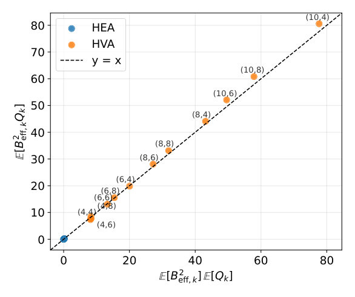
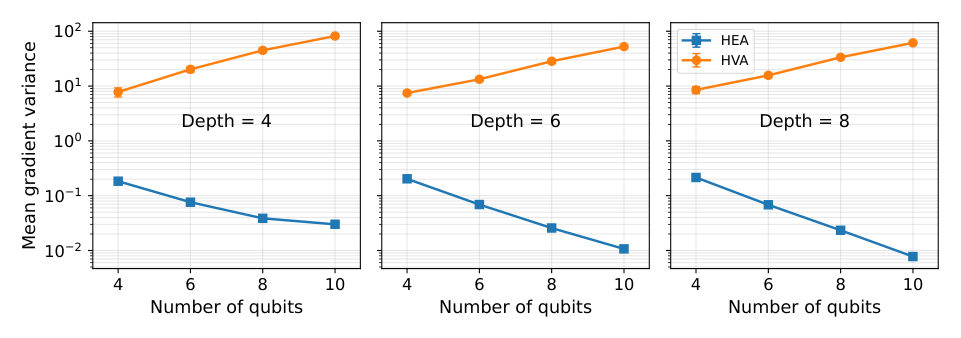
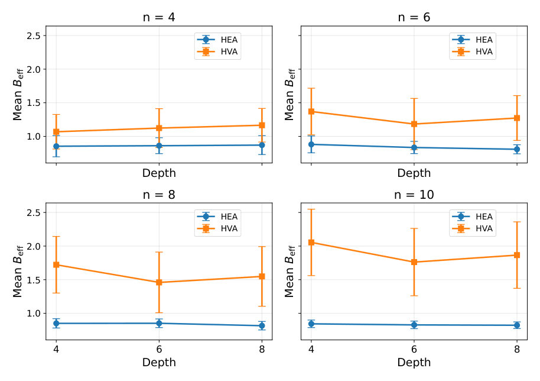
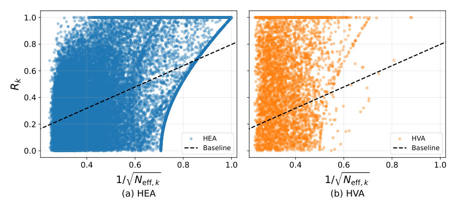
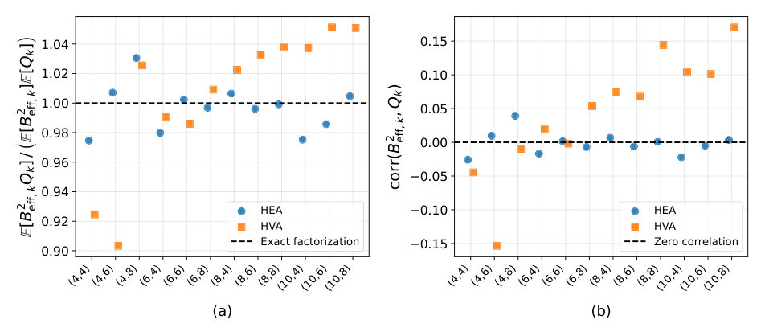
Detailed structure
**Main problem.** The paper seeks to understand the microscopic mechanism behind Barren Plateaus (BPs) in variational quantum circuits, specifically whether gradient vanishing is caused by a reduction in active terms or by destructive interference between terms. **Main result.** The authors demonstrate that BPs can be understood as a regime of destructive interference and that structured ansatzes like HVA avoid BPs by improving sign organization (coherence) rather than just reducing the number of active terms. **Method.** The study introduces a diagnostic framework using cancellation ratios and effective term counts, establishing a 'variance bridge' identity to link these metrics to standard gradient variance theory. **Model / system.** The research uses the Transverse-Field Ising Model (TFIM) and its longitudinal extension as a testbed, comparing Hardware-Efficient Ansatz (HEA) and Hamiltonian Variational Ansatz (HVA). **Key observables.** Cancellation ratio (R_k), effective term count (N_eff,k), interference-quality measure (B_eff,k), and gradient variance. **Important parameters / regimes.** System size (n), circuit depth (d), and the random-sign model baseline. **Assumptions / limitations.** The analysis assumes a random-sign model as a null baseline and focuses on the regime where gradient contributions can be decomposed into individual Hamiltonian terms. **Figures summary.** Figure 1 shows the variance bridge identity; Figure 2 compares gradient variance scaling for HEA and HVA; Figure 3 shows mean B_eff across scales; Figure 4 shows the relationship between cancellation ratio and effective term count; Figure 5 validates the variance bridge factorization. **Paper structure.** The paper begins by defining the mechanistic gap in BP theory, introduces a new diagnostic framework for gradient decomposition, establishes a mathematical bridge to existing variance theory, and then uses numerical simulations of TFIM with HEA and HVA to demonstrate how structured ansatzes escape the destructive interference regime.Abstract
Barren plateaus (BPs) are usually described by the exponential suppression of gradient variance, but the mechanism by which gradient signal disappears remains unclear. We show that this phenomenon can be understood as destructive interference among termwise gradient contributions. To make this perspective operational, we introduce a diagnostic framework based on the cancellation ratio $R_k$, the effective term count $N_{\mathrm{eff},k}$, and the interference-quality measure $B_{\mathrm{eff},k}=R_k\sqrt{N_{\mathrm{eff},k}}$. Under a random-sign model, $B_{\mathrm{eff},k}$ remains near a stable baseline, defining a random-sign cancellation regime. For the transverse-field Ising model (TFIM), we find that the hardware-efficient ansatz (HEA) remains close to this regime across system sizes and depths, whereas the Hamiltonian variational ansatz (HVA) systematically escapes it. In particular, HVA exhibits larger $B_{\mathrm{eff},k}$ not merely because $N_{\mathrm{eff},k}$ is larger, but because $R_k$ also remains systematically larger despite the broader term participation. This pattern indicates improved sign organization rather than simple term suppression. We further establish an exact identity that connects the proposed interference diagnostics directly to the standard variance-based theory of BPs. These results position destructive interference as a mechanistic interpretation of BP-like behavior in the regimes studied here, but they do not imply that BPs and destructive interference are universally interchangeable across all architectures and settings.Detailed structure
**Main problem.** The paper addresses the challenge of computationally realizing ultrastable glasses, which possess exceptionally low-energy states and enhanced stability, by reviewing the algorithms used to access these deeply supercooled states. **Main result.** The authors provide a comprehensive review and comparative analysis of the most effective algorithms for generating ultrastable glasses, discussing their efficiency, limitations, and the resulting stability achieved. **Method.** The paper reviews various numerical algorithms that utilize unphysical moves to bypass conventional cooling protocols and access non-equilibrium glassy states. **Model / system.** The study focuses on amorphous solids and ultrastable glasses, specifically looking at deeply supercooled and non-equilibrium glassy states. **Key observables.** Kinetic, thermodynamic, and mechanical stability of the glass states. **Important parameters / regimes.** Energy levels of the glassy states, degree of supercooling, and the efficiency of various computational algorithms. **Paper structure.** The paper outlines key algorithmic steps, discusses the efficiency and physical interpretation of individual approaches, and concludes with a comparative analysis of stability across different methods.Abstract
Ultrastable glasses, amorphous solids with exceptionally low-energy states and enhanced kinetic, thermodynamic and mechanical stability, have long been a subject of intense experimental interest. Over the past decade, their computational realization has emerged as a major goal in condensed matter physics, as numerical methods can exploit unphysical moves to access deeply supercooled and nonequilibrium glassy states far beyond the reach of conventional cooling protocols, thereby providing key insights into the nature of the glass transition and amorphous states and enabling the design of mechanically robust glassy materials. In this review, we outline the key steps underlying the most effective algorithms developed across the field. For each approach, we discuss its efficiency, limitations, and physical interpretation. We finally present a comparative analysis of the stability achieved across these methods, with the aim of equipping both newcomers and experts with an intuitive and comprehensive understanding of the field's current state and the opportunities it presents.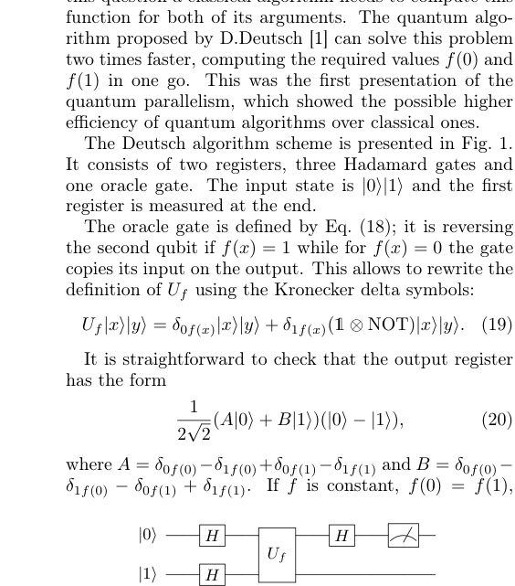
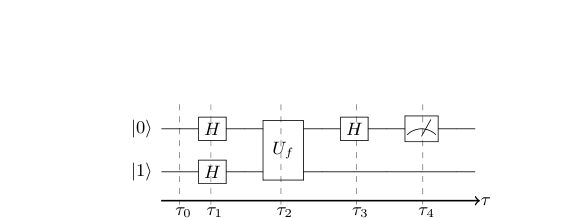
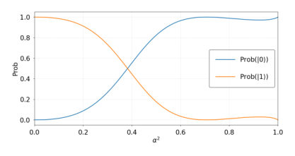
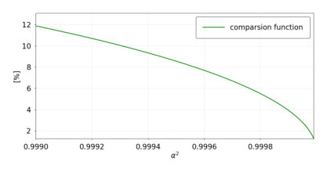
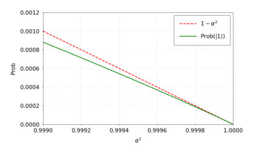
Detailed structure
**Main problem.** Developing a physical model to describe quantum gate dynamics and predict error propagation in the Deutsch algorithm using a projection evolution framework. **Main result.** The study demonstrates that the total error of the Deutsch algorithm can be smaller than the error of a single Hadamard gate, revealing a self-correcting effect under certain error conditions. **Method.** The authors use second quantization formalism (creation and annihilation operators) and density matrix evolution within a Projection Evolution (PEv) model where time is treated as a quantum observable. **Model / system.** The system is a two-qubit quantum register modeled as a two-level harmonic oscillator within the second quantization formalism, implementing the Deutsch algorithm. **Key observables.** Probability of correct and incorrect results (Prob(|0>) and Prob(|1>)), density matrices, and the evolution parameter tau. **Important parameters / regimes.** The single-gate success probability alpha^2 and the discrete evolution steps tau_0 through tau_4. **Assumptions / limitations.** The wave function depends on all four spacetime coordinates, evolution operators are represented by an orthogonal resolution of unity, and the phase alpha is set to zero. **Figures summary.** Figure 1 shows the Deutsch algorithm circuit; Figure 2 illustrates the evolution timeline; Figure 3 plots success/failure probabilities against gate error; Figure 4 compares algorithm error to single-gate error; Figure 5 shows the ratio of these errors. **Paper structure.** The paper introduces the PEv model and its application to the Deutsch algorithm, derives evolution operators for gates using second quantization, performs error propagation analysis for bit-flip errors, and concludes with a comparison of algorithm-level vs. gate-level error rates.Abstract
This work demonstrates that the Deutsch algorithm can be effectively modelled using a two-level harmonic oscillator within the second quantization formalism. By adopting this framework, evolution operators are derived. We present a projection evolution model that accurately characterizes the physical state transformation within quantum gates. This approach provides a systematic method for finding evolution operators, enabling the complete description and prediction of state evolution - including projection errors - in quantum algorithms.Detailed structure
**Main problem.** The paper investigates the entanglement cost required to implement non-local quantum computation (NLQC) using a single round of communication and shared entanglement. **Main result.** The work provides a comprehensive review of the upper and lower bounds on the entanglement cost for NLQC and explores its connections to various fields. **Method.** The paper is a book-length theoretical treatment and review of the bounds and applications of non-local quantum computation. **Model / system.** The system consists of two spatially separated quantum systems that interact via a single round of classical communication and shared entanglement. **Key observables.** entanglement cost **Assumptions / limitations.** The framework assumes a single round of communication and the availability of shared entanglement. **Paper structure.** The paper serves as a book-length review, covering the definition of NLQC, bounds on entanglement cost, and its applications in cryptography, complexity, and quantum gravity.Abstract
This is a book-length treatment of the subject of non-local quantum computation (NLQC). NLQC is a method for implementing quantum operations that interact two systems without directly bringing the systems together. Instead, a single round of communication and shared entanglement is used. NLQC has appeared in the context of quantum cryptography, computational complexity, communication complexity, quantum gravity, and other applications. The understanding of entanglement cost in NLQC is closely tied to questions in all of these areas. We review upper and lower bounds on entanglement cost, as well as some of the applications of NLQC and its connections to other subjects.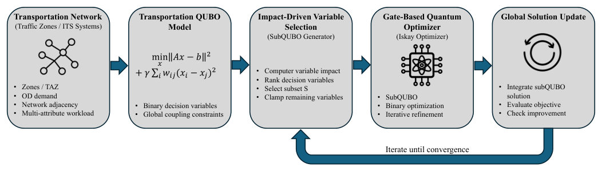
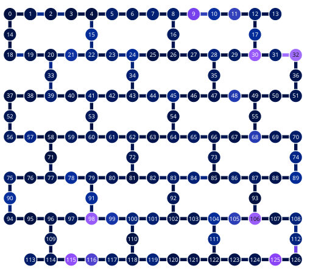
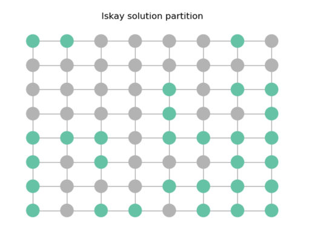

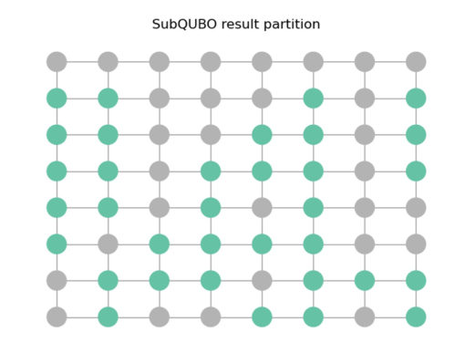
Detailed structure
**Main problem.** The challenge of partitioning large-scale transportation networks into balanced and spatially coherent zones, which involves dense quadratic interactions that exceed the capacity of current NISQ hardware. **Main result.** The proposed impact-driven hybrid framework improves convergence and spatial coherence compared to classical refinement, acting as a scalable mechanism for NISQ-era hardware, though it does not outperform direct quantum optimization. **Method.** A hybrid quantum-classical framework that uses energy sensitivity analysis to identify influential decision variables and assigns reduced sub-QUBO instances to a gate-based quantum processor. **Model / system.** A transportation network modeled as a spatial graph using a Quadratic Unconstrained Binary Optimization (QUBO) formulation, implemented on the IBM Quantum System One backend using the Iskay optimizer. **Key observables.** QUBO objective value (representing workload balance and spatial coherence) and spatial partition quality (continuity vs. fragmentation). **Important parameters / regimes.** Number of traffic zones (n=64), number of operational attributes (m), and the size of the active quantum subspace (q). **Assumptions / limitations.** The optimization difficulty is non-uniformly distributed, allowing for selective optimization; the method assumes the primary bottleneck is hardware scale rather than algorithmic complexity. **Figures summary.** Figure 1 shows the hybrid workflow; Figure 2 displays IBM hardware connectivity and error rates; Figures 3, 4, and 6 visualize different partition results (direct, classical, and hybrid); Figures 5 and 7 show objective value trajectories for classical and hybrid methods, respectively. **Paper structure.** The paper introduces the transportation partitioning problem, formulates it as a QUBO, proposes the impact-driven decomposition framework, describes the implementation on IBM hardware, presents comparative experimental results, and discusses scalability tradeoffs and future work.Abstract
Partitioning transportation networks into balanced and spatially coherent traffic zones is a fundamental yet computationally challenging task in intelligent transportation systems. The resulting optimization problem exhibits dense interactions among decision variables and can be formulated as a Quadratic Unconstrained Binary Optimization (QUBO) model. While quantum optimization naturally aligns with such quadratic energy representations, current noisy intermediate-scale quantum hardware imposes limitations on problem size, connectivity, and circuit reliability. This paper proposes an impact-driven hybrid quantum--classical optimization framework for traffic zone partitioning that bridges transportation-scale optimization models and practical gate-based quantum processors. Instead of static geographic decomposition, the method estimates the energy impact of decision variables and selectively assigns quantum computation to influential subproblems while a classical coordination loop maintains global feasibility. The framework is implemented using the Iskay optimizer and evaluated on the IBM Quantum System One backend. Experiments compare direct quantum optimization, classical iterative SubQUBO refinement, and the proposed hybrid approach. Results show that impact-guided decomposition improves convergence behavior and produces more coherent spatial partitions relative to classical refinement, while remaining consistent with hardware constraints. Although the hybrid method does not outperform the best direct quantum solution, it demonstrates a practical pathway toward scalable hybrid optimization for transportation applications under current quantum hardware conditions.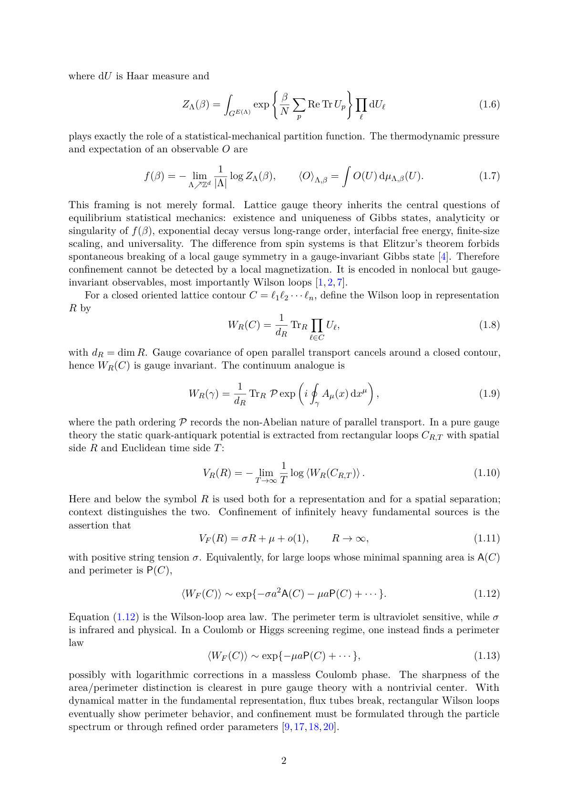
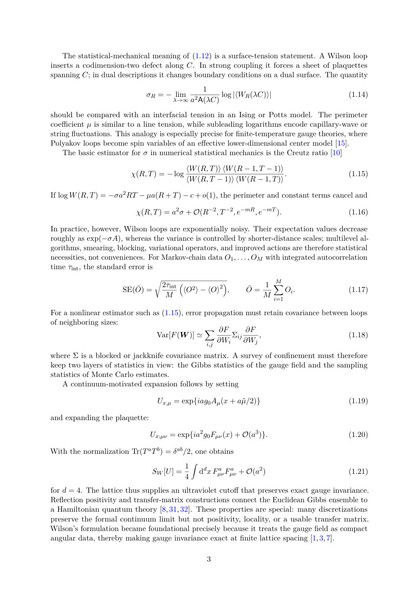
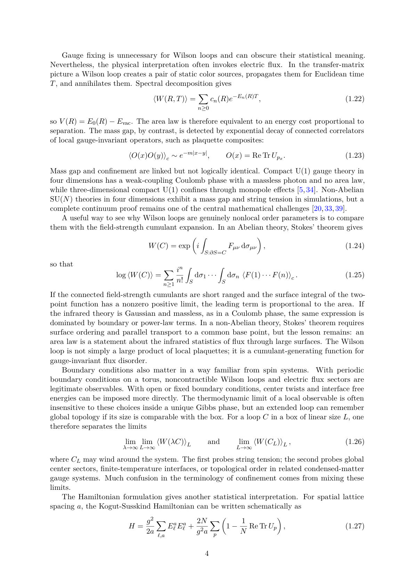
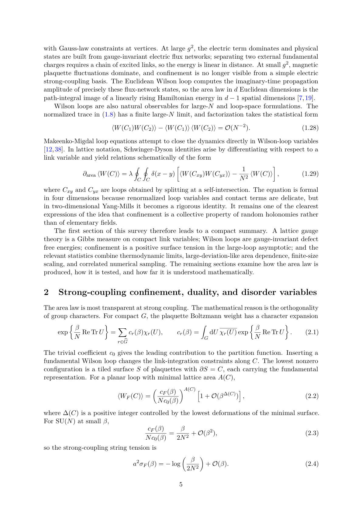
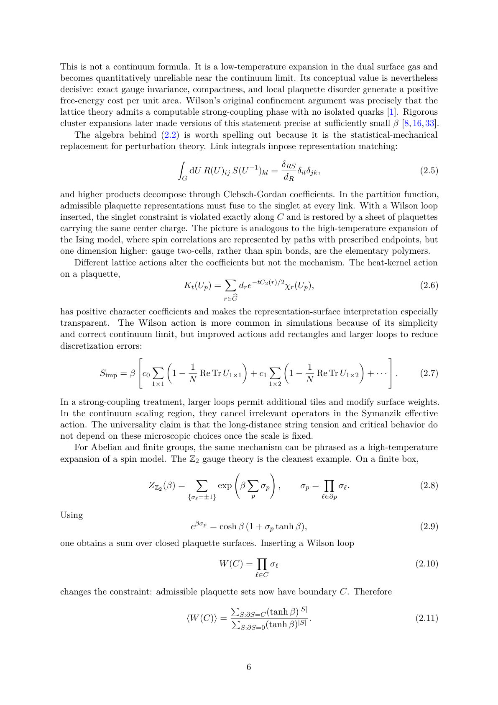
Detailed structure
**Main problem.** Understanding the mechanism of confinement in lattice gauge theory through the lens of statistical mechanics, specifically how the area law arises and the mathematical challenge of proving a continuum mass gap. **Main result.** The survey synthesizes various viewpoints—including center vortices, monopoles, and dualities—to show that confinement is a statistical-mechanical phenomenon related to surface tension and extended topological defects. **Method.** The paper reviews theoretical frameworks such as strong-coupling expansions, character expansions, duality transformations, and numerical Monte Carlo techniques like multilevel algorithms. **Model / system.** Lattice Gauge Theory (LGT) formulated as a statistical mechanics of parallel transport on a Euclidean hypercubic lattice, including SU(N) Yang-Mills, Z2 gauge theory, and compact U(1) models. **Key observables.** Wilson loops, Polyakov loops, 't Hooft loops, Creutz ratio, string tension, and the mass gap. **Important parameters / regimes.** Coupling constant (beta), number of colors (N), temperature (T), lattice spacing (a), and N-ality. **Assumptions / limitations.** The analysis assumes the validity of the continuum limit and relies on the convergence of expansions like the strong-coupling or cluster/polymer expansions. **Paper structure.** The paper begins with the statistical-mechanical formulation of LGT, moves through strong-coupling and duality mechanisms, discusses numerical diagnostics and error analysis, explores finite-temperature transitions and universality, and concludes with the mathematical status of the continuum limit.Abstract
Wilson loops provide the central gauge-invariant probe of confinement in lattice gauge theory. This survey reviews the statistical-mechanical formulation of lattice gauge ensembles, the strong-coupling and duality mechanisms behind area laws, finite-temperature and continuum scaling diagnostics, and the mathematical status of Wilson-loop confinement.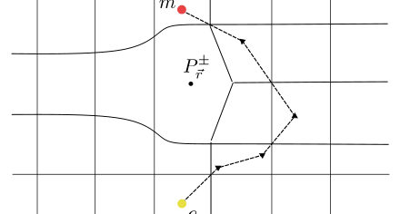
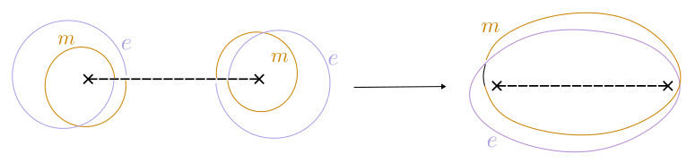
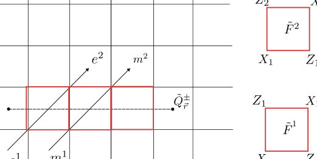
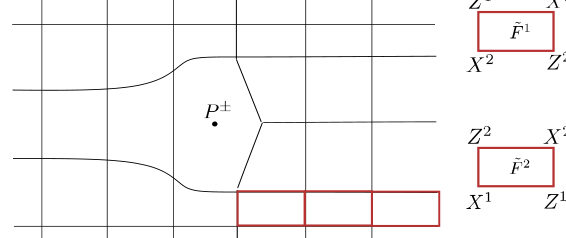
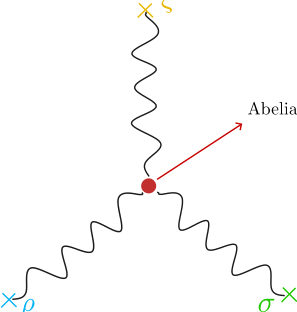
Detailed structure
**Main problem.** The paper explores the microscopic lattice realization of anyonic symmetries and their associated twist defects within a Z2 x Z2 topological order. **Main result.** The study demonstrates that lattice dislocations can induce twist defects that permute anyon labels, establishes non-Abelian fusion rules for these defects, and shows that the fusion of electric-magnetic duality and layer exchange symmetries results in a trivalent junction carrying an Abelian anyon. **Method.** The authors use an algebraic approach involving the analysis of loop (Wilson) operators, K-matrix Chern-Simons theory, and the construction of branch cuts and dislocations in a lattice Hamiltonian. **Model / system.** A Z2 x Z2 topological order constructed as a bilayer of two decoupled Wen plaquette models (a double toric code) on a square lattice. **Key observables.** Quantum dimensions, fusion rules, double loop operator eigenvalues, and ground state degeneracy. **Important parameters / regimes.** The anyon labels in Z2^4, the K-matrix, and the specific permutations (sigma, rho, xi) of the anyonic symmetries. **Assumptions / limitations.** The derivation assumes the validity of the K-matrix formalism and the specific structure of the Z2 x Z2 topological order. **Figures summary.** Figure 1 illustrates a dislocation defect and anyon mutation; Figure 2 shows closed loops of e or m particles; Figure 5 depicts a branch cut with pentagon operators; Figure 6 depicts the fusion of sigma and rho defects at a trivalent junction. **Paper structure.** The paper introduces the microscopic model, defines the anyonic symmetries, details the lattice implementation of twist defects via dislocations, performs algebraic characterization of defect types and fusion rules, and concludes with a detailed derivation of loop operator eigenvalues.Abstract
In this work, we explore a microscopic realization of three types of anyonic symmetries in a $\mathbb{Z}_2\times\mathbb{Z}_2$ topological order, corresponding to a double toric code. These symmetries act as nontrivial permutations on the anyon labels of the parent state. We consider a setup consisting of two decoupled Wen plaquette models stacked on top of each other and introduce dislocations that modify the Hamiltonian, giving rise to localized twist defects, eventually inducing interactions between the layers. In this context, branch cuts act as sources of anyon permutations when they cross it. We characterize the defects by calculating their quantum dimensions, and we also consider double loop operators around them that allow us to determine the non-Abelian fusion rules between the defects, including when they carry different anyon permutations.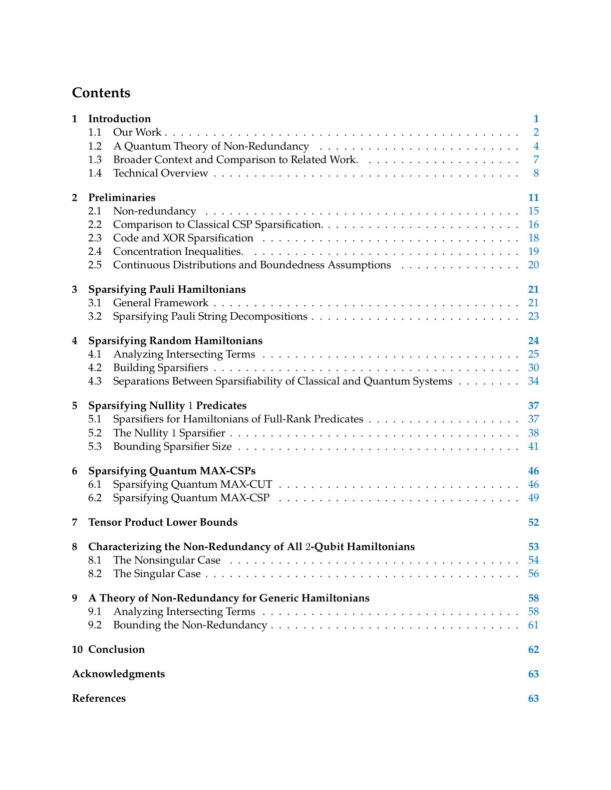
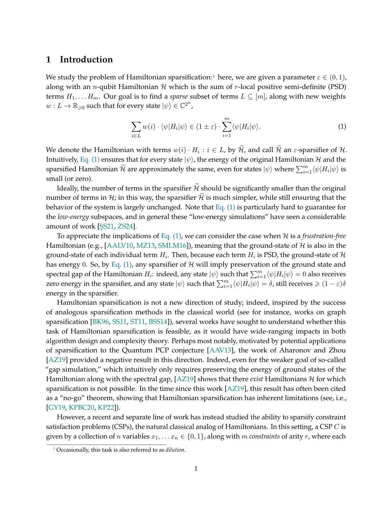
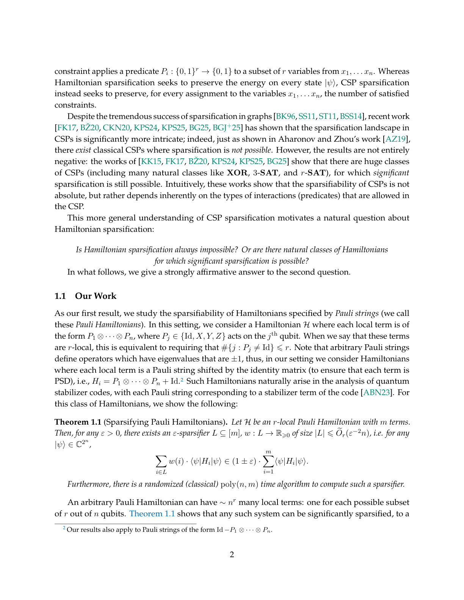
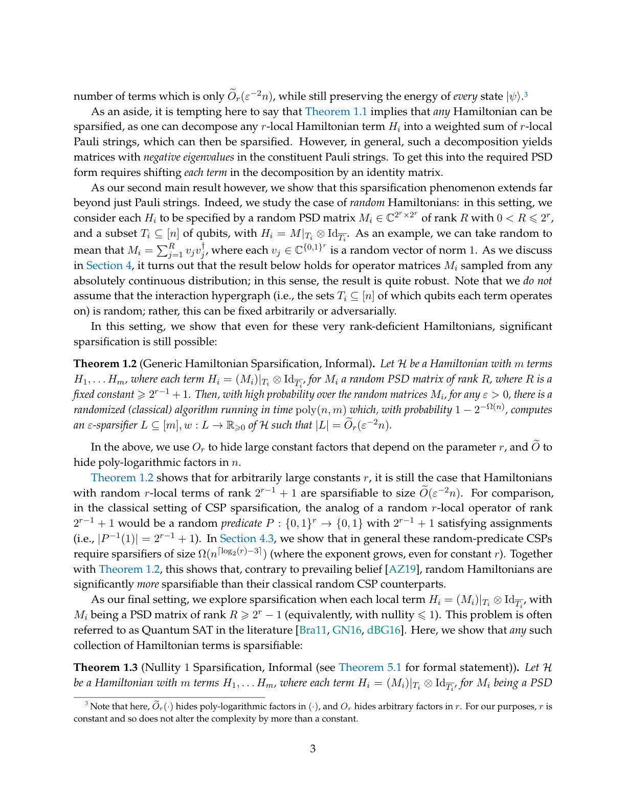
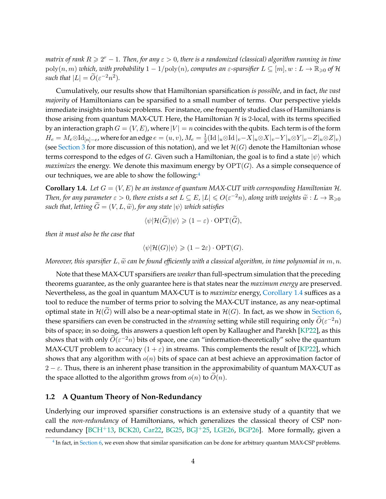
Detailed structure
**Main problem.** The paper investigates whether complex, many-term local Hamiltonians can be replaced by a much smaller, sparse set of terms (sparsifiers) that preserve the expectation value of energy for all quantum states within a $(1 \pm \epsilon)$ factor. **Main result.** The authors prove that many classes of Hamiltonians, including Pauli strings, random operators, and certain Quantum SAT instances, are highly sparsifiable, contradicting previous 'no-go' beliefs and suggesting quantum systems may be easier to sparsify than classical ones. **Method.** The study uses a new framework of 'non-redundancy' analysis, randomized classical algorithms, matrix concentration inequalities (Matrix Chernoff Bound), and algebraic techniques like automorphism group analysis and polynomial methods. **Model / system.** The study focuses on $n$-qubit quantum systems governed by $r$-local, positive semi-definite (PSD) Hamiltonians, specifically examining Pauli Hamiltonians, random $r$-local operators, and $r$-partite hypergraph models. **Key observables.** The primary observable is the expectation value of the Hamiltonian energy $\langle \psi | H | \psi angle$ across all possible states $|\psi angle$. **Important parameters / regimes.** Key parameters include the error tolerance $\epsilon$, the locality $r$, the number of original terms $m$, the rank $R$ of the local operators, and the non-redundancy (NRD) of the Hamiltonian. **Assumptions / limitations.** The results primarily apply to generic or random Hamiltonians and specific structured classes like Pauli strings; the sparsifiability may fail for Hamiltonians with specific tensor product structures. **Paper structure.** The paper introduces the problem of Hamiltonian sparsification, develops a theory of non-redundancy to characterize barriers to sparsification, analyzes specific classes (Pauli, random, and Quantum SAT), provides lower bounds for tensor product structures, and concludes with implications for quantum complexity and algorithms.Abstract
We study the problem of Hamiltonian sparsification: given a parameter $\varepsilon \in (0,1)$ and an $n$-qubit Hamiltonian $H$ which is the sum of $r$-local positive semi-definite (PSD) terms $H_1, \dots H_m$, our goal is to compute a sparse set $L \subseteq [m]$, along with weights $w: L \rightarrow \mathbb{R}_{\geq 0}$ such that for every state $|ψ\rangle\in \mathbb{C}^{2^n}$, $$ \sum_{i \in L} w(i) \langle ψ| H_i | ψ\rangle \in (1 \pm ε) \sum_{i = 1}^m \langle ψ| H_i | ψ\rangle $$. When the set $L$ is significantly smaller than $m$, this reduces the number of terms in the underlying system, while still ensuring that the behavior of the system is essentially unchanged. We show that many Hamiltonians indeed are sparsifiable to a number of terms much smaller than $n^r$, including: (a) Hamiltonians where each term is an $r$-local Pauli string, (b) Hamiltonians where each term is an $r$-local random operator of rank $R$, for $R \geq 2^{r-1}+1$, and (c) Hamiltonians where each term is an arbitrary $r$-local operator of rank $\geq 2^r -1$ (a.k.a. Quantum SAT). Taken together, our results show that the sparsifiability of Hamiltonians is a robust phenomenon, contrary to prevailing belief (see for instance, Aharonov-Zhou ITCS 2019, QIP 2019). Our results find applications, for instance, to better (semi-)streaming algorithms for quantum Max-Cut, answering a question left open by Kallaugher and Parekh (FOCS 2022). In fact, our results even codify that quantum systems are often easier to sparsify than their classical counterparts.Mobility Anisotropy Reshapes Self-Propelled Motion
Authors: Amir Shee, P. S. Pal
Type: theory · Category: statistical mechanics · PDF: https://arxiv.org/pdf/2605.02148v1
Analysis basis: abstract only; PDF text extraction failed or PDF unavailable
Topic relevance: non-equilibrium dynamics 2/5
Summary. This paper provides an exact solution for the dynamics of anisotropic self-propelled particles in a harmonic trap. It demonstrates that mobility anisotropy can drive particles into high-potential regions, resulting in a sub-Gaussian distribution. This work is significant for understanding the behavior of microswimmers and autonomous robots in confined environments.
Why it may be interesting. not directly relevant
Detailed structure
Main problem. The study investigates how anisotropic translational mobility affects the nonequilibrium dynamics and steady-state distribution of a self-propelled particle in a harmonic trap.
Main result. The authors find that anisotropic mobility leads to a sub-Gaussian steady-state position distribution and a negative excess kurtosis, causing particles to be displaced into high-potential regions in the high-persistence regime.
Method. The authors provide an exact analytical solution to the nonequilibrium dynamics of the system.
Model / system. A two-dimensional self-propelled particle (relevant to rodlike microswimmers or wheeled robots) subject to anisotropic translational mobility and a harmonic confining potential.
Key observables. Mean displacement, Mean Squared Displacement (MSD), fourth moment, excess kurtosis, and position distribution.
Important parameters / regimes. Ratio of mechanical to rotational relaxation timescales, persistence regime, and the degree of mobility anisotropy.
Assumptions / limitations. The system is modeled as a self-propelled particle in a 2D harmonic trap with anisotropic mobility.
Paper structure. The paper presents an exact solution for the dynamics, analyzes the MSD and mean displacement, calculates the steady-state fourth moment and kurtosis, and discusses the resulting sub-Gaussian position distribution.
Abstract
We exactly solve the nonequilibrium dynamics of a harmonically trapped self-propelled particle with anisotropic translational mobility in two dimensions, relevant to rodlike microswimmers and wheeled robots. The mean displacement and MSD reveal a quasi-steady plateau with vanishing fluctuations in the high-persistence regime. An exact calculation of steady-state fourth moment yields a negative excess kurtosis that varies non-monotonically with the ratio of mechanical to rotational relaxation timescales. This gives rise to a strictly sub-Gaussian steady-state position distribution, in which the particle with anisotropic mobility, in high persistence regime, is displaced into the high-potential region lying outside the stationary contour set by the activity and harmonic confinement. This is further corroborated by the relaxation of the MSD from the quasi-steady plateau to the steady-state regime.
Structured Parameterization and Non-Stabilizerness in Hypergraph QAOA
Authors: Evan Camilleri, André Xuereb, Tony J. G. Apollaro, Mirko Consiglio
Type: theory · Category: quantum information and computing · PDF: https://arxiv.org/pdf/2605.01620v1
Analysis basis: full PDF text, analyzed in chunks
Topic relevance: entanglement & information structure 2/5
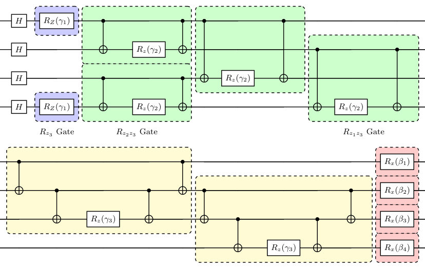
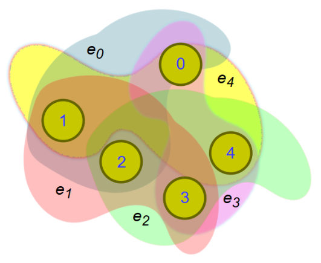
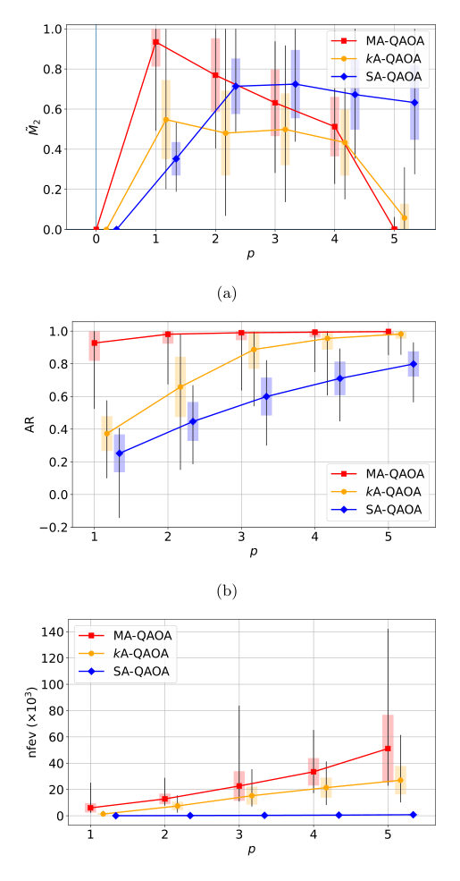
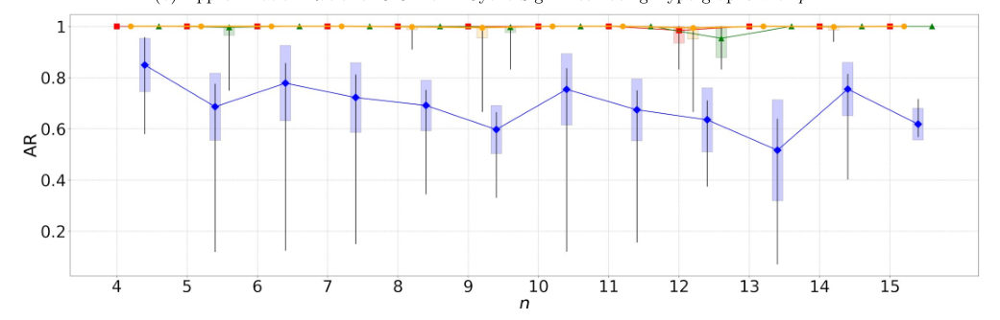
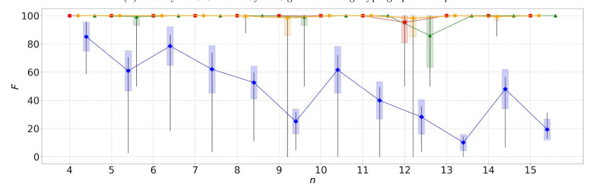
Summary. This paper introduces kA-QAOA, a new parameterization for the QAOA algorithm that groups interactions by their order. It demonstrates that this method can match the performance of more complex multi-angle approaches while being much more efficient to optimize, making it highly suitable for NISQ-era hardware with multi-qubit gates.
Why it may be interesting. not directly relevant
Detailed structure
Main problem. Finding an optimal QAOA parameterization that balances solution quality (expressiveness) with classical optimization complexity (number of parameters and function evaluations) for hypergraph-based optimization problems.
Main result. The proposed kA-QAOA achieves approximation ratios comparable to the highly expressive MA-QAOA but requires significantly fewer function evaluations and parameters, effectively acting as a middle ground between efficiency and quality.
Method. The authors introduce kA-QAOA, which groups cost function terms by their k-body interaction order, and benchmark it against SA, MA, and AA-QAOA using classical optimizers (BFGS, Powell) and TQA initialization.
Model / system. The study focuses on the Quantum Approximate Optimization Algorithm (QAOA) applied to combinatorial optimization problems on hypergraphs, specifically 3-uniform cyclic sign-alternating hypergraphs and random coefficient hypergraphs using k-body Ising-like Hamiltonians.
Key observables. Approximation Ratio (AR), Fidelity, Number of Function Evaluations (nfev), and Non-stabilizerness (Stabilizer Renyi Entropy).
Important parameters / regimes. Number of QAOA layers (p), interaction order (k), and parameter initialization strategies (e.g., 1/p, TQA0.75).
Assumptions / limitations. The approach assumes the availability of hardware capable of executing native multi-qubit gates (e.g., trapped ions or neutral atoms) to avoid the overhead of decomposing k-body terms into two-qubit gates.
Figures summary. Figure 1 shows a 4-qubit cost Hamiltonian circuit; Figure 3 compares performance metrics (magic, AR, nfev) across QAOA variants; Figures 4-7 show AR, fidelity, and nfev for specific hypergraph problem classes across different layers.
Paper structure. The paper introduces the kA-QAOA scheme, defines the hypergraph problem classes and Hamiltonians, details the benchmarking methodology and optimization strategies, presents comparative results for different hypergraph types, and discusses the implications regarding magic and resource efficiency.
Abstract
The quantum approximate optimization algorithm (QAOA) has emerged as a promising candidate for demonstrating quantum advantage on noisy intermediate-scale quantum (NISQ) devices. While various QAOA parameterization schemes exist, ranging from the original single-angle approach to the more expressive multi-angle quantum approximate optimization algorithm (MA-QAOA) and automorphic-angle quantum approximate optimization algorithm (AA-QAOA), each presents distinct trade-offs between expressiveness and classical optimization complexity. In this work, we introduce the $k$-interaction-angle quantum approximate optimization algorithm ($k$A-QAOA), a parameterization scheme that groups cost function terms by their $k$-body interaction order, providing a natural middle ground between parameter efficiency and solution quality. This approach is particularly well-suited for combinatorial optimization problems defined on hypergraphs, where multi-body interactions naturally arise in applications such as Boolean satisfiability and resource allocation with multi-party constraints. We benchmark $k$A-QAOA against standard single-angle quantum approximate optimization algorithm (SA-QAOA), MA-QAOA, and AA-QAOA on two problem classes: 3-uniform cyclic sign-alternating hypergraphs and random coefficient hypergraphs. Our results demonstrate that $k$A-QAOA achieves approximation ratios comparable to MA-QAOA while requiring significantly fewer function evaluations, thereby reducing quantum resource consumption.
Structures of Identical Particle Systems : Efficient Computation of Many-Body Density of States
Authors: Hovan Lee, Rémi Lefèvre, Grégoire Ithier
Type: theory · Category: numerical methods · PDF: https://arxiv.org/pdf/2605.02864v1
Analysis basis: full PDF text, analyzed in chunks
Topic relevance: analog quantum simulation 2/5
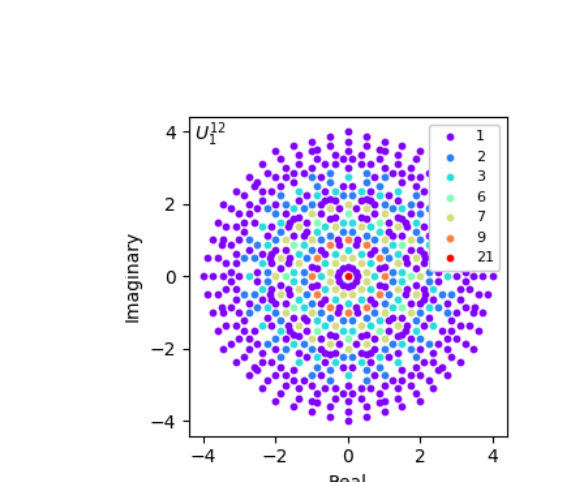
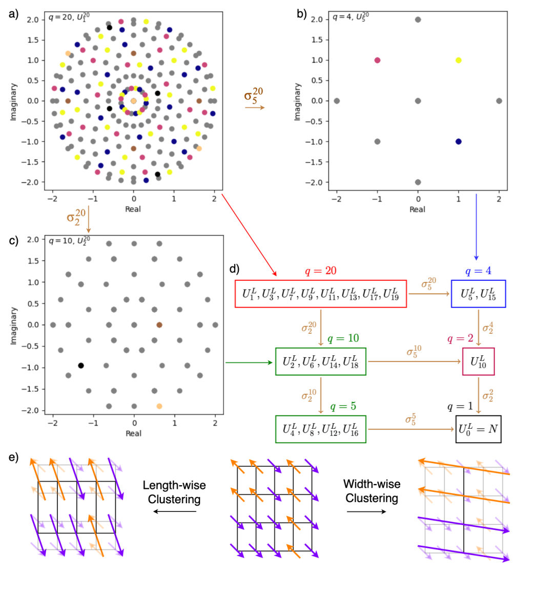
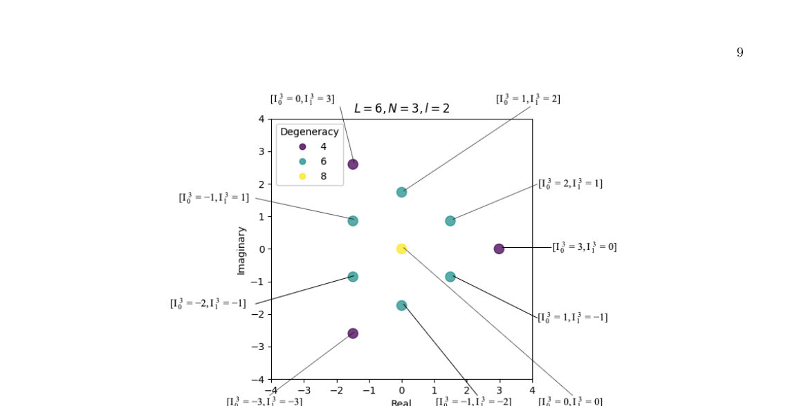
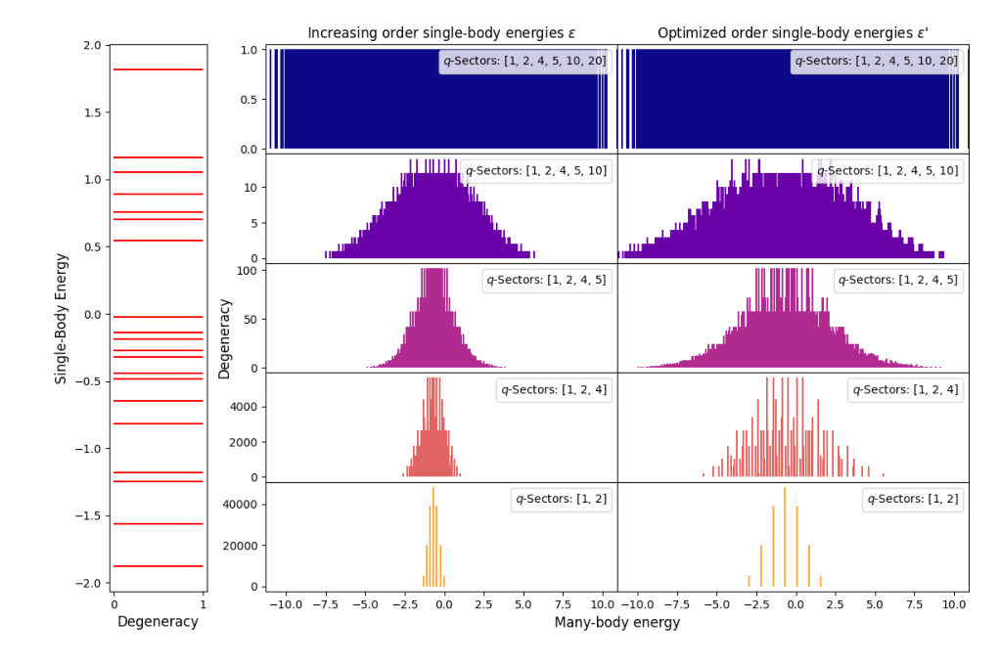
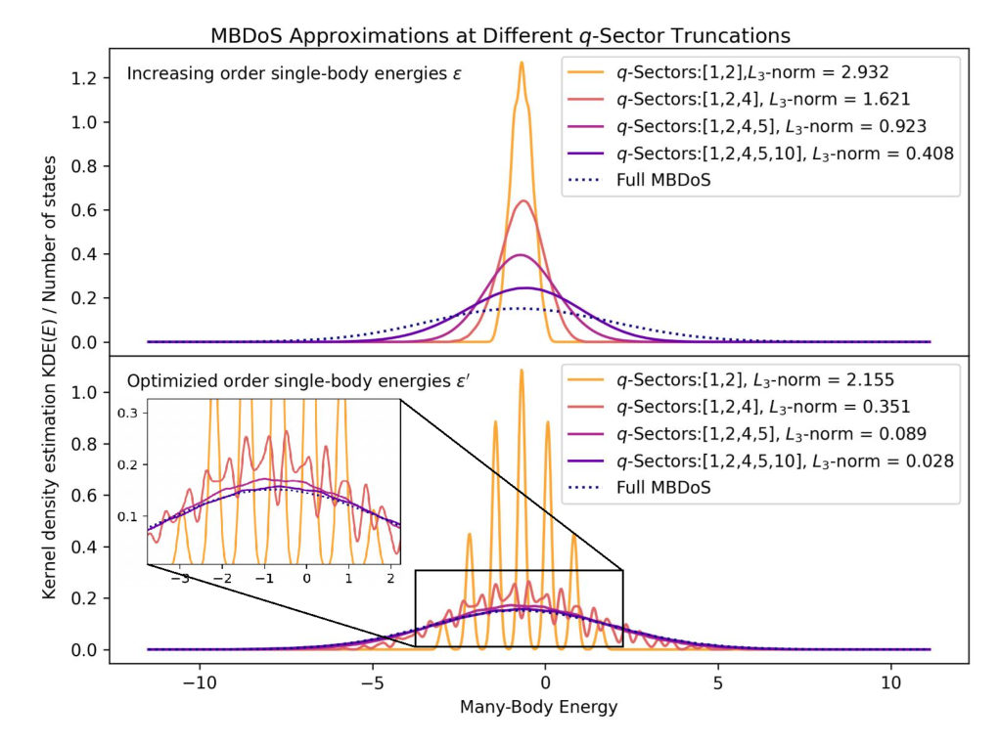
Summary. The paper introduces an efficient numerical framework for computing the many-body density of states for identical particle systems. By leveraging the algebraic symmetries of the system's universal combinatorial properties, the authors can approximate the spectrum with tunable accuracy and significantly reduced computational complexity. This allows for the recovery of statistical distributions, such as Bose-Einstein statistics, without prior assumptions about particle statistics.
Why it may be interesting. It provides a highly efficient way to compute many-body spectra and thermodynamic properties (like temperature and occupation numbers) for large systems without the need for expensive Monte Carlo sampling, which is directly applicable to analyzing the microcanonical ensemble in cold atom or trapped ion experiments.
Detailed structure
Main problem. The combinatorial explosion of the many-body density of states (MBDoS) for identical particle systems, which makes exact calculations intractable as the number of particles and single-particle states increases.
Main result. A method that reduces computational cost by a combinatorial factor by separating universal combinatorial properties from system-specific quantities and using a hierarchical q-sector truncation scheme.
Method. The approach uses SVD to separate universal properties, Galois theory to study symmetries in cyclotomic fields, and generating functions with transfer matrices for efficient counting. It also employs simulated annealing to optimize single-particle energy permutations to minimize information loss during truncation.
Model / system. Isolated quantum systems of identical particles (bosons and fermions) in a finite-dimensional space with L single-particle levels and N particles.
Key observables. Many-body density of states (MBDoS), single-particle occupation numbers, and microcanonical inverse temperature.
Important parameters / regimes. Number of particles (N), number of single-particle states (L), occupancy limit (R), and single-particle energy spectrum (epsilon).
Assumptions / limitations. The method assumes the postulate of equiprobability (microcanonical ensemble) and the ergodicity hypothesis; it also relies on a kernel width (Gamma) for smoothing the spectrum.
Figures summary. Figure 1 shows the distribution of universal spectrum components in the complex plane; Figure 2 illustrates the hierarchical sector flow and its similarity to block-spin renormalization; Figure 3 demonstrates the generating function expansion for specific degeneracy classes; Figure 4 and 5 compare the accuracy of different energy permutations and truncation levels using Kernel Density Estimation; Figure 6 and 7 show the MBDoS, temperature estimates, and recovered particle distributions.
Paper structure. The paper introduces the computational problem, presents a mathematical framework based on SVD and Galois theory to identify universal spectra, develops a generating function method for counting, proposes a hierarchical truncation scheme for efficiency, optimizes this scheme via simulated annealing, and validates the method by recovering Bose-Einstein distributions.
Abstract
We present a method for approximating the many-body density of states of a system of quantum identical particles, with a reduction of the computational cost by a combinatorial factor compared to the full calculation. This is carried out by considering an isolated quantum system of identical particles, and studying its non-interacting many-body spectrum through the use of a new approach based on a separation of universal combinatorial properties from the system-specific quantities. In this paper we focus on a practical computation method that leverages our formalism of many-body combinatorics, in order to perform an efficient numerical computation of the many-body density of states. In addition, this method provides further computational improvements by allowing most of the results to be cached in persistent storage and computed incrementally, making way for efficient use of parallelization and dynamic programming techniques. We give an extensive description of the method and provide several detailed examples of approximations of bosonic many-body density of states with tunable accuracy requirements. Lastly, we demonstrate how one such approximation can be used to recover Bose-Einstein-like distributions without any particle statistics assumptions.
Toward the Goldilocks blind compression of quantum states
Authors: Hyunho Cha, Chae-Yeun Park, Jungwoo Lee
Type: theory · Category: quantum information and computing · PDF: https://arxiv.org/pdf/2605.01258v1
Analysis basis: full PDF text, analyzed in chunks
Topic relevance: entanglement & information structure 2/5
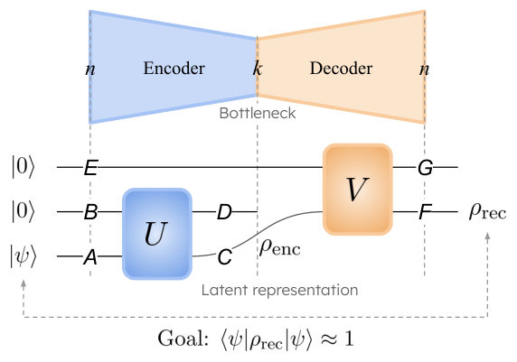
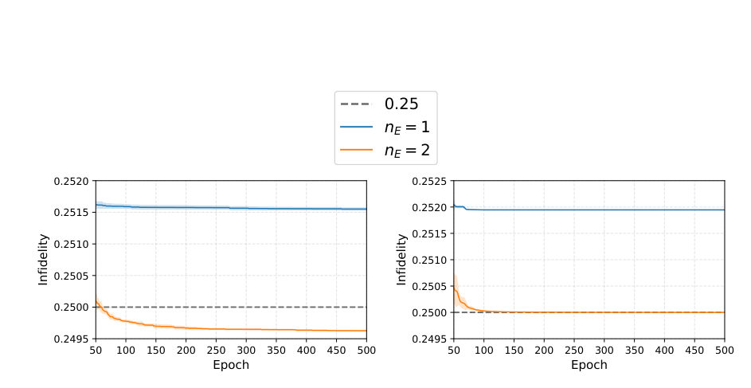
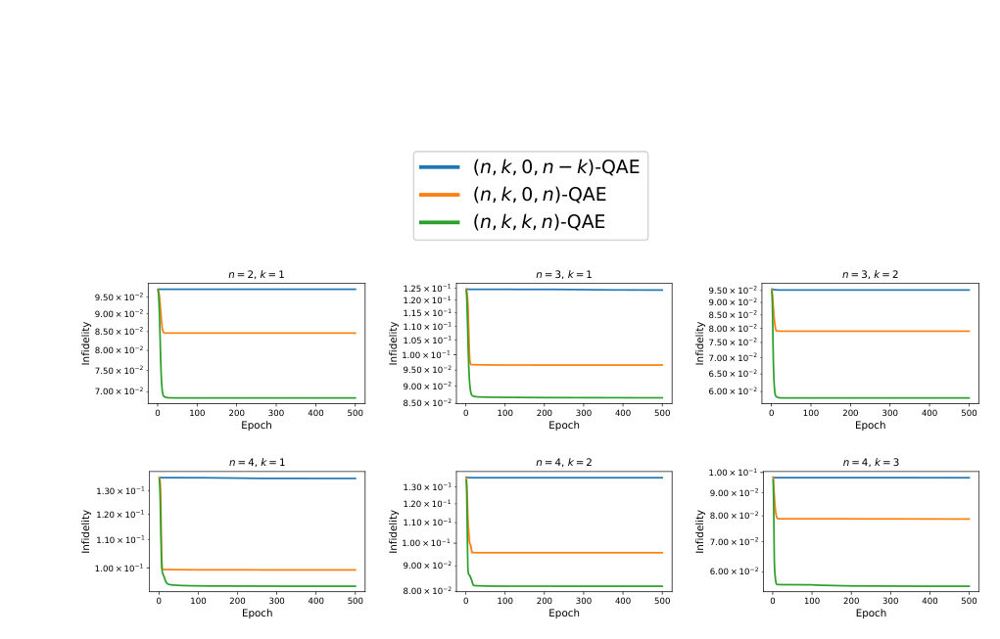
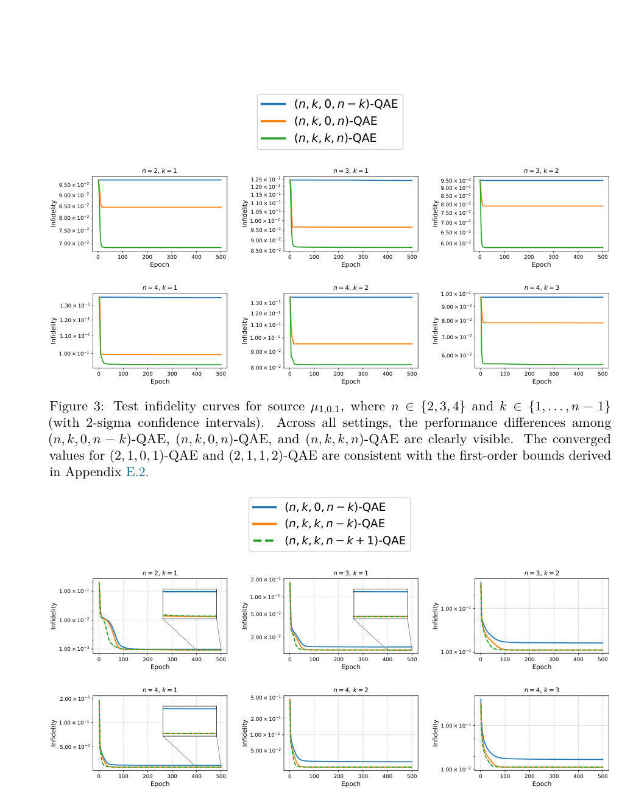
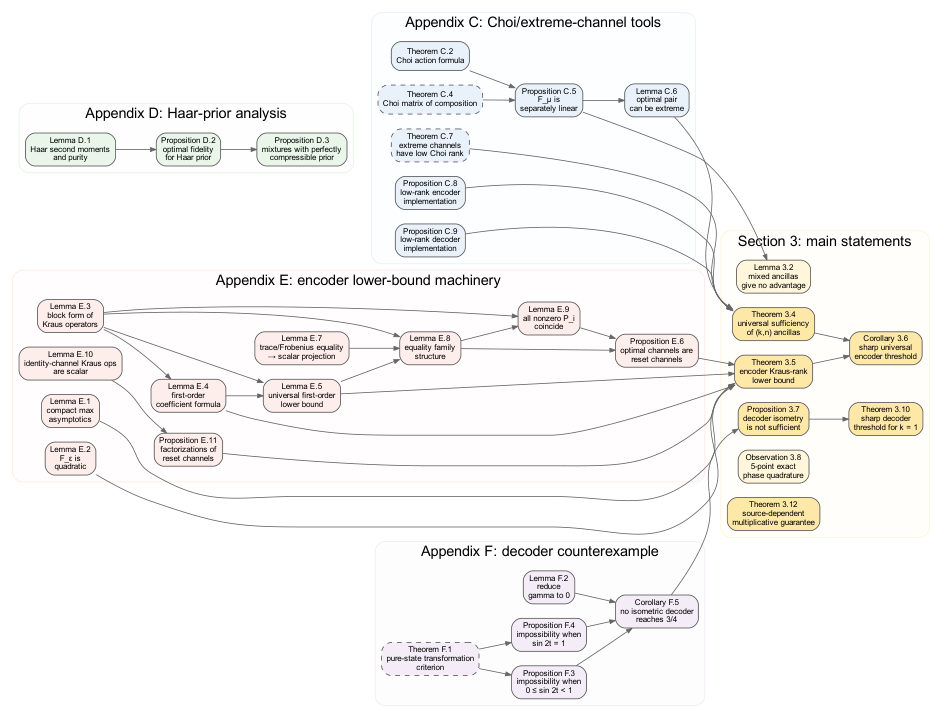
Summary. This paper identifies the optimal resource requirements for quantum autoencoders, finding a 'Goldilocks' balance of ancillas that achieves maximum reconstruction fidelity. It proves that a specific, limited number of ancillas is sufficient for the encoder, while providing a counterexample where more complex decoders are theoretically better but practically negligible.
Why it may be interesting. not directly relevant
Detailed structure
Main problem. Determining the minimal circuit width (ancilla requirements) for optimal blind, single-copy quantum state compression in Quantum Autoencoders (QAEs).
Main result. The authors identify a 'Goldilocks' regime where an architecture with exactly k encoder ancillas and n decoder ancillas achieves optimal fidelity, proving that while isometric decoders are not universally optimal, they are practically near-optimal.
Method. The study uses mathematical frameworks involving CPTP maps, Stinespectring dilations, and Gram-matrix criteria, supplemented by numerical experiments using MNIST-encoded quantum states and Adam optimization.
Model / system. A Quantum Autoencoder (QAE) framework designed to compress n-qubit input states from a distribution mu into a k-qubit latent bottleneck using unitary operations and ancilla registers.
Key observables. Average fidelity, average infidelity, and circuit width (ancilla counts).
Important parameters / regimes. n (input qubits), k (latent qubits), nB (encoder ancillas), nE (decoder ancillas), and the error parameter epsilon.
Assumptions / limitations. The study focuses on the single-copy, blind compression regime rather than the asymptotic i.i.d. regime, and some proofs regarding encoder rank are valid for sufficiently small error rates.
Figures summary. Figure 1 shows the QAE architecture; Figure 2 compares isometric vs. non-isometric decoder infidelity; Figure 3 shows the necessity of encoder ancillas; Figure 4 shows performance on MNIST data.
Paper structure. The paper introduces the QAE problem, defines the mathematical framework for compression, provides theoretical proofs for encoder and decoder ancilla thresholds, presents numerical validation using MNIST and phase-family distributions, and discusses limitations and open questions.
Abstract
Quantum autoencoders (QAEs) are learning architectures that compress quantum data into a low-dimensional latent state while preserving the information needed for reconstruction. We study blind single-copy compression of quantum states through a $k$-qubit bottleneck and investigate the minimal circuit width required to attain the information-theoretic optimum under average infidelity. Between the conventional architecture, which is narrow but nonuniversal, and fully general \emph{completely positive and trace preserving} (CPTP) realizations, which are universal but overparameterized, we identify a \emph{Goldilocks} regime. We prove that for every distribution of pure $n$-qubit states, there exists a QAE with exactly $k$ encoder ancillas and $n$ decoder ancillas that achieves the optimal fidelity over all CPTP encoder--decoder pairs. The encoder-side statement is sharp in that we construct source families for which every optimal scheme necessarily uses at least $k$ encoder ancillas, thereby determining the universal encoder threshold exactly. On the decoder side, we show that isometric decoders are exactly optimal for several analytically tractable source families, but we also exhibit an explicit counterexample demonstrating that decoder isometry is not universally sufficient. Nevertheless, numerical experiments indicate that the performance gap is practically negligible.
Reservoir computing by thin film embedded with magnetic impurities
Authors: Shuto Kamakura, Tomi Ohtsuki, Jun-ichiro Ohe
Type: theory · Category: disordered systems and neural networks · PDF: https://arxiv.org/pdf/2605.01360v1
Analysis basis: full PDF text, analyzed in chunks
Topic relevance: non-equilibrium dynamics 1/5 · spintronics-quantum-optics interface 1/5
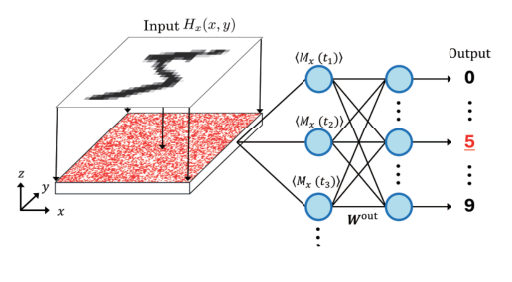
Summary. This paper demonstrates that a thin film with magnetic impurities can function as a reservoir computer for image recognition. By leveraging long-range dipole-dipole interactions, the system converts spatial patterns into temporal signals, offering a potential path toward low-cost, easy-to-fabricate spintronic machine learning hardware.
Why it may be interesting. not directly relevant
Detailed structure
Main problem. Developing a practical, easily realizable magnetic reservoir computing system that overcomes the high power consumption and fabrication difficulties of existing spintronic hardware.
Main result. The long-range dipole-dipole interaction effectively encodes spatial input patterns into temporal magnetization fluctuations, achieving up to 75% accuracy in MNIST digit recognition using spatially averaged outputs.
Method. Numerical simulations of magnetization dynamics using the OOMMF framework and the Landau-Lifshitz-Gilbert equation, combined with training a linear output layer via Stochastic Gradient Descent.
Model / system. A thin film (1um x 1um x 0.1um) embedded with randomly distributed magnetic impurities (Ni or YIG) subject to external magnetic fields, uniaxial anisotropy, exchange interaction, and long-range dipole-dipole interaction.
Key observables. Spatially averaged magnetization components and their time derivatives.
Important parameters / regimes. Impurity concentration (1% to 100%), saturation magnetization (Ms), and external magnetic field strength.
Assumptions / limitations. The input data is prepared by taking a spatial average in the sample; the system relies on the presence of long-range dipole-dipole interactions for complex dynamics.
Figures summary. Figure 1 shows a schematic of the thin film with magnetic impurities; Figure 4 compares classification accuracy using raw magnetization versus its time derivative for Ni impurities.
Paper structure. The paper introduces the problem of magnetic reservoir computing, describes the physical model of a thin film with impurities, details the simulation methodology and MNIST task, presents results regarding the role of dipole interactions and material properties, and concludes with the implications for hardware implementation.
Abstract
The reservoir computing based on the thin film embedded with magnetic impurities in the presence of the long-range (the dipole-dipole) interaction is numerically investigated. We simulated the magnetization dynamics by taking into account the dipole-dipole interaction and performed the handwritten-digit recognition task. Although the training data is prepared by taking spatial average in the sample, the high classification accuracy is achieved. Our result demonstrates that the long range interaction effectively encodes the complex spatial input pattern into the time domain, even when only a spatially averaged output is accessible. The proposed system paves the way for easily realizable magnetic reservoir computing.
Designing a Satellite Serviced Quantum Network Backbone for Concurrent Global Connectivity
Authors: Prateek Mantri, Stav Haldar, Albert Williams, Don Towsley
Type: theory · Category: quantum information and computing · PDF: https://arxiv.org/pdf/2605.02164v1
Analysis basis: full PDF text, analyzed in chunks
Topic relevance: entanglement & information structure 1/5
Summary. This paper proposes architectural design principles for a global quantum internet using LEO satellites. It demonstrates how optimizing satellite orbits and ground station placement can overcome the lack of quantum buffering to enable reliable, concurrent global entanglement distribution.
Why it may be interesting. not directly relevant
Detailed structure
Main problem. Designing an efficient satellite-serviced quantum network backbone that supports concurrent global connectivity while addressing the unique constraints of entanglement (no-cloning) and limited quantum buffering.
Main result. Identified that anisotropic ground-station placement, multi-inclination LEO constellations, and multi-point satellite service policies significantly reduce connectivity latency and improve global entanglement availability.
Method. A discrete-time simulator using a Gaussian-beam optical link-efficiency model and renewal theory to analyze connectivity statistics and waiting times.
Model / system. A global hybrid network consisting of a Low-Earth Orbit (LEO) satellite constellation distributing photonic Bell pairs to a lattice of optical ground stations connected via terrestrial fiber.
Key observables. Time-to-connectivity (latency), latency-conditioned average active-link strength, entanglement-generation rates, and largest connected component (LCC) fraction.
Important parameters / regimes. Orbital altitude (h), orbital inclination (i), anisotropy parameter (alpha) for ground-station spacing, and number of optical terminals per satellite (T).
Assumptions / limitations. Assumes a conservative regime with minimal reliance on long-lived quantum memories and excludes physical-layer impairments like atmospheric turbulence, cloud cover, and detector noise.
Figures summary. Figure 1 shows orbital geometry parameters; Figure 2 illustrates bipartite connectivity in a specific region; Figure 3 shows ground-station density variations and lattice layouts; Figure 4 depicts the hub-spoke-ring service model.
Paper structure. The paper introduces the architectural problem, defines the geometric and orbital models, presents a simulation framework based on renewal theory, evaluates various architectural configurations (ground-station, constellation, and service policy), and concludes with a discussion of scalability and future directions.
Abstract
Satellite-serviced quantum networks pose an architectural problem distinct from classical satellite networking: because entanglement cannot be copied, and long-lived buffering is technologically constrained for near-term devices, useful end-to-end service requires fixed optical ground infrastructure and simultaneous multi-hop path availability. We investigate the design of a satellite-serviced quantum backbone aimed at supporting concurrent global connectivity across a traffic matrix of major population and financial centers under finite waiting-time constraints. Using a discrete-time simulator, we evaluate performance using two architecture-level metrics: (i) time-to-connectivity, and (ii) latency-conditioned average active-link strength. Across a broad parameter sweep, we identify three dominant architectural effects. First, anisotropic ground-station lattices reduce time-to-connectivity relative to longitudinally collapsed and isotropic baselines by aligning ground infrastructure with latitude-dependent satellite access. Second, multi-inclination LEO constellations reduce waiting times for strong connectivity compared to single-inclination constellations at fixed satellite budgets by providing additional visibility for a diverse latitude set. Third, multi-party satellite service policies alleviate per-satellite concurrency bottlenecks and substantially reduce time-to-connectivity at stringent traffic-matrix thresholds. We further show that satellite altitude is the dominant physical lever shaping the visibility--loss trade-off, strongly affecting both connectivity latency and achievable link strength, while orbital plane count and satellite packing provide secondary refinements at fixed altitude. Together, these results delineate the architectural conditions required for scalable, concurrent entanglement connectivity in satellite-serviced quantum networks.
Geometric Formulation of Power-Efficiency Bounds in Carnot-like Engines
Authors: R. X. Zhai
Type: theory · Category: statistical mechanics · PDF: https://arxiv.org/pdf/2605.02732v1
Analysis basis: full PDF text, analyzed in chunks
Topic relevance: non-equilibrium dynamics 1/5
Summary. This paper introduces a geometric method to calculate the exact limits of the power-efficiency trade-off in heat engines. By treating dissipation as a geometric optimization problem, it provides new analytical bounds for engines where heat loss scales with time via power laws, covering both sublinear and superlinear regimes.
Why it may be interesting. not directly relevant
Detailed structure
Main problem. Determining the exact power-efficiency trade-off constraints for Carnot-like heat engines operating under non-standard dissipation regimes.
Main result. The authors derive a unified geometric framework that provides exact power-efficiency frontiers and closed-form constraints for specific power-law dissipation exponents.
Method. The problem is reformulated as a geometric optimization and linear programming problem in the plane of normalized branch dissipations.
Model / system. A Carnot-like heat engine operating between two reservoirs at temperatures Th and Tc, featuring a branch-resolved power-law dissipation model where irreversible heat scales with branch duration as tau^(-alpha).
Key observables. Efficiency (eta), power (P), and dimensionless irreversible heats (sigma_h, sigma_c).
Important parameters / regimes. Carnot efficiency (eta_C), dissipation exponent (alpha or epsilon = 1/alpha), and the dissipation asymmetry parameter (xi).
Assumptions / limitations. The model assumes irreversible heat transfer follows a power-law decay with branch duration and focuses on branch-resolved dissipation rather than microscopic engine mechanisms.
Figures summary. Figure 1 shows the isosceles trapezoidal attainable region for dimensionless irreversible heats; Figure 2 illustrates the linear programming formulation of the power-efficiency constraint.
Paper structure. The paper introduces the power-efficiency problem, defines the power-law dissipation model, presents a geometric optimization framework, applies it via linear programming to find efficiency bounds, and provides analytical solutions for specific dissipation exponents.
Abstract
We formulate the power-efficiency constraint of Carnot-like heat engines as a geometric optimization problem in the plane of normalized branch dissipations. Efficiency contours are straight lines in this plane, so maximizing efficiency at fixed power reduces to bounding the slope of an admissible line. We apply this framework to branch-resolved power-law dissipation, where the irreversible loss on each isothermal branch decays with the branch duration with a common exponent rather than following the standard inverse-time law. After optimizing over the dissipation-asymmetry parameter, the fixed-power attainable set becomes a two-dimensional region, and the resulting slope-bound problem reduces to linear programming. The framework yields the exact power-efficiency frontier within this model and gives closed-form constraints for representative dissipation exponents, including the maximum-power limit.
Sample-Based Quantum Diagonalization with Amplitude Amplification
Authors: Nina Stockinger, Ludwig Nützel, Michael J. Hartmann
Type: theory · Category: quantum information and computing · PDF: https://arxiv.org/pdf/2605.02565v1
Analysis basis: full PDF text, analyzed in chunks
Topic relevance: quantum measurements 1/5
Summary. This paper introduces SQD-AA, a new quantum algorithm that uses amplitude amplification to solve the sampling bottleneck in sample-based diagonalization. It demonstrates that this approach can significantly reduce the number of required quantum measurements and circuit depth, making molecular electronic structure calculations more feasible in the early fault-tolerant era.
Why it may be interesting. not directly relevant
Detailed structure
Main problem. The Sample-Based Quantum Diagonalization (SQD) algorithm suffers from high measurement overhead because dominant bitstrings are sampled repeatedly, while the sub-dominant bitstrings needed for accuracy are rarely observed.
Main result. The proposed SQD-AA algorithm achieves a quadratic advantage in query complexity for exponentially decaying distributions and reduces total T-gate complexity by up to an order of magnitude compared to standard SQD, while maintaining significantly shallower circuits than iQPE.
Method. The authors introduce SQD-AA, which integrates Amplitude Amplification (AA) into the SQD framework to sequentially rotate the quantum state and reduce the probability of previously measured bitstrings.
Model / system. The method is evaluated on electronic structure Hamiltonians for molecules such as cyclopentadiene, Cr2, H2O, and Mo2, using both RPA and UCJ/ASP state preparation models.
Key observables. Ground state energy (GSE), T-count, T-depth, total query complexity, and total number of shots.
Important parameters / regimes. Target fidelity (Ft), convergence threshold (tau), target chemical accuracy (epsilon), and decay rates (alpha and gamma) for bitstring distributions.
Assumptions / limitations. Assumes an early fault-tolerant computing regime and requires approximate knowledge of bitstring probabilities to implement the amplification steps.
Figures summary. Figure 1 visualizes the AA rotation process; Figure 2 shows the SQD-AA algorithm flowchart and circuit schematic; Figure 3 illustrates query complexity ratios for algebraic decay; Figure 4 and 5 compare T-count and T-depth across different molecular systems.
Paper structure. The paper introduces the SQD sampling problem, presents the SQD-AA algorithm and its analytical complexity, evaluates performance on model distributions (algebraic/exponential), benchmarks against SQD and iQPE using molecular systems, and discusses parameter optimization and hardware implications.
Abstract
Recently, sample-based quantum diagonalization (SQD) has emerged as a promising approach to compute ground and excited states of problem Hamiltonians.This method classically diagonalizes a Hamiltonian in a subspace that is spanned by samples obtained from a quantum computer. However, by its nature, SQD suffers from a fundamental sampling problem, as some basis states that are required for a targeted accuracy may only be sampled extremely rarely. To alleviate this limitation, we introduce the SQD-AA algorithm that combines SQD with amplitude amplification (AA). SQD-AA uses AA to sequentially reduce probabilities of already measured bitstrings, thus making the observation of new ones more likely. We observe a reduction in the total query complexity of more than a factor 100 for algebraically and exponentially decaying model distributions, and analytically show a quadratic advantage for the latter. Moreover, we evaluate real molecules in an early fault-tolerant scenario and compare SQD-AA to SQD and iterative quantum phase estimation (iQPE). For all considered examples, we observe the lowest total number of T-gates for SQD-AA while only requiring circuits that are 3-4 orders of magnitude shallower than those needed for iQPE. Given this substantial reduction in circuit depth compared to iQPE while saving 2 orders of magnitude in total runtime compared to SQD, we expect a significant regime in early fault-tolerance where SQD-AA runs feasibly, but iQPE circuits are too deep to execute confidently.
The Complexity of Stoquastic Sparse Hamiltonians
Authors: Alex B. Grilo, Marios Rozos
Type: theory · Category: quantum information and computing · PDF: https://arxiv.org/pdf/2605.02845v1
Analysis basis: full PDF text, analyzed in chunks
Topic relevance: entanglement & information structure 1/5
Summary. This paper establishes that the problem of finding the ground state energy of a sparse stoquastic Hamiltonian is complete for the complexity class StoqMA. It also demonstrates that the power of a stoquastic verifier does not increase with the number of unentangled provers beyond two, providing a significant result for quantum complexity theory.
Why it may be interesting. not directly relevant
Detailed structure
Main problem. The paper aims to determine the computational complexity of the Stoquastic Sparse Hamiltonian problem (StoqSH) and investigate the power of the complexity class StoqMA when multiple unentangled proofs are provided.
Main result. The authors prove that StoqSH is StoqMA-complete and that the separable version of this problem is StoqMA(2)-complete, effectively showing that k unentangled Merlins can be simulated by two.
Method. The work employs a Kitaev-style circuit-to-Hamiltonian construction, a sparse decomposition of Hamiltonians into 1-sparse terms, and a product test using SWAP tests to simulate multiple unentangled provers.
Model / system. The study focuses on Stoquastic Sparse Hamiltonians, which are matrices where off-diagonal elements are non-positive, ensuring the ground state has non-negative amplitudes, and where each row has at most polynomial non-zero entries.
Key observables. The ground state energy (specifically the minimum eigenvalue) and the acceptance probability of the quantum verifier.
Important parameters / regimes. The energy gap (alpha - beta) which is assumed to be at least 1/poly(n), the sparsity d, and the completeness and soundness parameters (a, b, c, s).
Assumptions / limitations. The proof assumes the existence of oracles to access sparse Hamiltonian entries and relies on the ability to decompose the Hamiltonian into 1-sparse terms.
Figures summary. Figure 3 shows a plot in the completeness vs. soundness plane illustrating the region where the simulation of k Merlins by two Merlins holds.
Paper structure. The paper begins by defining the complexity classes and the StoqSH problem, then proceeds to prove the StoqMA-completeness of StoqSH, followed by an investigation into the separable version and the simulation of multiple unentangled provers (StoqMA(k) to StoqMA(2)).
Abstract
Despite having an unnatural definition, $\mathsf{StoqMA}$ plays a central role in Hamiltonian complexity, e.g., in the classification theorem of the complexity of Hamiltonians by Cubitt and Montanaro (SICOMP 2016). Moreover, it lies between the two randomized extensions of $\mathsf{NP}$, $\mathsf{MA}$ and $\mathsf{AM}$. Therefore, understanding the exact power of $\mathsf{StoqMA}$ (and hopefully collapsing it with more natural complexity classes) is of great interest for different reasons. In this work, we take a step further in understanding this complexity class by showing that the Stoquastic Sparse Hamiltonians problem ($\mathsf{StoqSH}$) is in $\mathsf{StoqMA}$. Since Stoquastic Local Hamiltonians are $\mathsf{StoqMA}$-hard, this implies that $\mathsf{StoqSH}$ is $\mathsf{StoqMA}$-complete. We complement this result by showing that the separable version of $\mathsf{StoqSH}$ is $\mathsf{StoqMA}(2)$-complete, where $\mathsf{StoqMA}(2)$ is the version of $\mathsf{StoqMA}$ that receives two unentangled proofs.
Other papers (38)
Papers from primary archives without highlighted authors or any topic match. Click to expand.
Show other papers
3D Quantum Hall Effect with Two Distinct Plateaus
Authors: Jun-Hong Li, Yi-Yuan Chen, Peng-Lu Zhao, Hai-Zhou Lu, X. C. Xie
Type: theory · Category: strongly correlated electrons · PDF: https://arxiv.org/pdf/2605.02188v1
Analysis basis: full PDF text, analyzed in chunks
Summary. This paper provides a theoretical explanation for the unexpected second Hall plateau in the 3D quantum Hall effect of HfTe5. It demonstrates that a magnetic-field-induced Lifshitz transition triggers a spin-density-wave that creates a global gap and a metal-insulator transition. This work highlights how the tunability of 3D Landau bands allows for richer physics than the 2D quantum Hall effect.
Why it may be interesting. not directly relevant
Detailed structure
Main problem. The paper aims to explain the origin of the second Hall plateau and the associated metal-insulator transition observed in the 3D quantum Hall effect of HfTe5.
Main result. The authors attribute the second plateau to an insulating ground state driven by a spin-density-wave (SDW) order, which arises from a magnetic-field-driven Lifshitz transition.
Method. The study employs mean-field analysis, renormalization-group (RG) analysis, and the Kubo formula to calculate transport properties.
Model / system. The system is the 3D weak topological insulator HfTe5 in the ultraquantum limit, modeled by a generic Dirac Hamiltonian describing 3D band dispersion.
Key observables. Hall conductivity (sigma_xy), longitudinal resistivity (rho_xx), and the density wave gap (Delta).
Important parameters / regimes. Magnetic field (B), carrier density (n0), Lifshitz transition field (BL), and quantum limit field (BQ).
Assumptions / limitations. The analysis assumes a screened Yukawa potential for electron-phonon interaction and uses a linearization of the Landau bands near Fermi points.
Figures summary. Fig 1 shows the evolution of Landau bands and the transition between the first and second Hall plateaus; Fig 2 illustrates the evolution of 0th Landau bands with magnetic field; Fig 3 shows the calculated magnitude of the density wave gap.
Paper structure. The paper introduces the experimental puzzle, presents a Dirac model for the 3D bands, identifies the Lifshitz transition and resulting SDW instability via mean-field and RG analysis, calculates transport signatures, and discusses experimental implications for materials like ZrTe5.
Abstract
The recent discovery of the 3D quantum Hall effect in $\mathrm{HfTe_5}$ has also revealed puzzling signatures of possible 3D fractionalization. Beyond the first plateau associated with the lowest Landau band, Hall conductivity exhibits a second plateau with a value of about $3/5$ of the first, accompanied by a suppressed longitudinal resistivity. Here, we attribute this second plateau to an insulating ground state arising from spin-density-wave order. We show that a magnetic-field-driven Lifshitz transition causes the spin-down holelike zeroth Landau band to cross the Fermi energy and that the resulting nesting between the lowest spin-up and spin-down Landau bands induces a spin-density wave. We calculate the Hall and longitudinal resistivity and reproduce the experimental behaviors. Our renormalization-group analysis further supports this insulating ground state. Our work reveals that the tunability of Landau bands along the magnetic-field direction endows the 3D quantum Hall effect with a broader phenomenology than its 2D counterpart and merits further exploration.
A Scalable FPGA Architecture for Real-Time Decoding of Quantum LDPC Codes Using GARI
Authors: Daniel Báscones, Arshpreet Singh Maan, Valentin Savin, Francisco Garcia-Herrero
Type: experiment · Category: quantum information and computing · PDF: https://arxiv.org/pdf/2605.01035v1
Analysis basis: full PDF text, analyzed in chunks
Summary. This paper presents a new FPGA-based hardware architecture designed for the real-time decoding of quantum LDPC codes. By utilizing the GARI method to handle correlated errors, the design significantly reduces hardware resource consumption and enables the deployment of multiple decoder cores on a single FPGA, paving the way for scalable, energy-efficient quantum error correction.
Why it may be interesting. not directly relevant
Detailed structure
Main problem. Achieving low-latency, scalable, and resource-efficient real-time decoding for Quantum LDPC codes, specifically addressing the hardware bottlenecks caused by correlated errors and increasing code distance.
Main result. The authors developed an FPGA architecture that achieves an average decoding latency of 596 ns for a [[144, 12, 12]] code, using six times fewer resources than previous GARI-based proposals and enabling multiple decoder cores on a single device.
Method. A scalable FPGA architecture using controlled parallelism and systematic resource reuse, implementing a message-passing (Belief Propagation) decoder based on the GAI (Graph Augmentation and Rewiring for Inference) framework.
Model / system. The implementation targets Quantum Low-Density Parity-Check (QLDPC) codes, specifically the [[144, 12, 12]] bivariate bicycle code, under a correlated error model (X, Y, and Z errors).
Key observables. Decoding latency, hardware resource utilization (LUTs, REGs, BRAMs), and decoding accuracy under correlated errors.
Important parameters / regimes. Code parameters [[144, 12, 12]], clock frequency of approximately 274-300 MHz, and 6-bit to 10-bit LLR quantization.
Assumptions / limitations. The routing efficiency assumes a uniform distribution of tags in the crossbar interconnect; the impact of reduced bit-width quantization on error floors is noted as an unknown.
Figures summary. Figure 1 shows the GARI architecture overview; Figure 2 details the DX, DZ decoder unit; Figure 4 illustrates the crossbar interconnect structure; Figure 5 shows the full decoder mapping; Figures 7-9 illustrate timing diagrams and physical placement on the FPGA.
Paper structure. The paper introduces the decoding problem and GARI framework, describes the proposed hardware architecture (DX, DZ and U, V units), details the interconnect and routing strategy, presents implementation results on Xilinx FPGAs, and discusses scalability and future work.
Abstract
In this work, we introduce a new hardware architecture for decoding correlated errors in quantum LDPC codes. The decoder is based on message passing and exploits the structure of the detector error model obtained through the recently introduced Graph Augmentation and Rewiring for Inference (GARI) method. The proposed architecture enables flexible scaling and can, in principle, adapt to any quantum LDPC codes using the GARI framework. It leverages resource reuse while maintaining a modest degree of parallelism, thereby reducing power consumption and area requirements, while preserving low decoding latency. As a case study, the architecture was implemented on a VCU19P FPGA as an ensemble of three decoder cores targeting the [[144,12,12]] bivariate bicycle code, achieving an average latency of 596 ns per decoding round. This implementation consumes six times fewer resources than the previous GARI-based proposal, being the first reported implementation of multiple decoder cores for correlated errors on a single FPGA device. This enables better energy-conscious scaling of the quantum error correction layer on the classical side, reducing overall power consumption while meeting real-time constraints without compromising decoding accuracy under correlated errors.
A Theory of Saddle Escape in Deep Nonlinear Networks
Authors: Divit Rawal, Michael R. DeWeese
Type: theory · Category: disordered systems and neural networks · PDF: https://arxiv.org/pdf/2605.01288v1
Analysis basis: full PDF text, analyzed in chunks
Summary. This paper provides a theoretical framework for understanding why deep neural networks experience long training plateaus followed by sudden feature acquisition. The authors prove that the time spent in these plateaus is governed by the number of layers at the small-scale 'bottleneck' rather than the total depth of the network. By classifying activation functions into universality classes, they show that the escape dynamics follow a predictable power-law scaling. The theory is robust, applying to both symmetric and asymmetric initializations and extending to multi-mode teacher scenarios.
Why it may be interesting. not directly relevant
Detailed structure
Main problem. Understanding the dynamical mechanism behind 'saddle escape' in deep nonlinear networks, specifically how the time required to escape training plateaus scales with network depth and initialization scale.
Main result. The discovery of a critical-depth escape law where escape time scales as epsilon^-(r-2), where r is the number of bottleneck layers, rather than the total network depth L.
Method. Derivation of an exact identity for weight matrix norm imbalance, reduction of high-dimensional matrix gradient flow to a scalar ODE via a symmetric balanced ansatz, and use of Hermite-moment expansions.
Model / system. Deep nonlinear feedforward networks with L layers, smooth activation functions (classified into four universality classes), and Gaussian inputs, trained via gradient flow on a population squared loss.
Key observables. Escape time (tau* or t_esc), layer weight Frobenius norms, signal energy (gamma), and layer scale imbalance (Delta_l).
Important parameters / regimes. Initialization scale (epsilon), bottleneck depth (r), total network depth (L), and nonlinearity order (q).
Assumptions / limitations. Small-scale initialization (epsilon -> 0), gradient flow dynamics, Gaussian input distribution, and the use of a permutation-symmetric submanifold for reduction.
Figures summary. Figure 1 compares reduced ODE loss to full-parameter GD; Figure 3 shows universality collapse of different activations; Figure 4 shows log-log plots of escape time vs epsilon confirming the power-law scaling; Figure 5 illustrates multi-mode escape dynamics.
Paper structure. The paper begins by deriving an exact identity for weight imbalance, introduces a reduction method to a scalar ODE, classifies activation functions, proves the critical-depth escape law for single-mode and multi-mode teachers, and validates the theory via numerical simulations.
Abstract
In deep networks with small initialization, training exhibits long plateaus separated by sharp feature-acquisition transitions. Whereas shallow nonlinear networks and deep linear networks are well studied, extending these analyses to deep nonlinear networks remains challenging. We derive an exact identity for the imbalance of Frobenius norms of layer weight matrices that holds for any smooth activation and any differentiable loss and use this to classify activation functions into four universality classes. On the permutation-symmetric submanifold, the identity combines with an approximate balance law to reduce the full matrix flow to a scalar ODE, giving a critical-depth escape time law $τ_\star = Θ(\varepsilon^{-(r-2)})$ governed by the number $r$ of layers at the bottleneck scale rather than the total depth $L$. We find that this same $r-2$ exponent is recovered under He-normal initialization with $r$ bottleneck layers rescaled by $\varepsilon$, where the symmetry manifold is preserved by the flow but not attracting. We find close agreement between our theory and numerical simulations.
Accelerating Noisy Variational Quantum Algorithms with Physics-Informed Denoising Networks
Authors: Jie Liu, Xin Wang
Type: theory · Category: quantum information and computing · PDF: https://arxiv.org/pdf/2605.02066v1
Analysis basis: full PDF text, analyzed in chunks
Summary. This paper introduces a neural network approach to accelerate error-mitigated quantum algorithms by learning to predict denoised optimization trajectories. By replacing expensive multi-noise evaluations with a physics-informed surrogate, it significantly reduces the circuit execution overhead for NISQ-era algorithms.
Why it may be interesting. not directly relevant
Detailed structure
Main problem. Variational Quantum Algorithms (VQAs) on NISQ hardware are limited by high computational costs from hardware noise and the significant sampling overhead required by error mitigation techniques like Zero-Noise Extrapolation (ZNE).
Main result. The proposed Physics-Informed Denoising Network (PIDN) achieves a 4-6x speedup in circuit executions compared to ZNE while maintaining comparable accuracy and gradient fidelity.
Method. A neural network surrogate model (PIDN) is trained using a hybrid loss function that combines data-matching with a physics-informed loss to enforce gradient consistency with ZNE-mitigated trajectories.
Model / system. The method is benchmarked on QAOA for MaxCut (3-regular graphs), Sherrington-Kirkpatrick, and Transverse-Field Ising models, as well as VQE for LiH, BeH2, and H2O molecules.
Key observables. Expectation values, gradient directions, approximation ratio (AR), energy error, and Relative Low-Frequency power ratio (RLF).
Important parameters / regimes. Noise levels (depolarizing and dephasing), noise strength (up to 1e-1), and the physics-loss weight (beta).
Assumptions / limitations. The method assumes the optimization dynamics can be captured by learning a trajectory tube and that the loss landscape retains sufficient low-frequency structure.
Figures summary. Figure 1 shows the three-stage workflow; Figure 2 illustrates the PIDN architecture; Figure 3 visualizes loss landscape deformation; Figure 6 shows energy convergence; Figure 9 shows the correlation between gradient similarity and landscape smoothness.
Paper structure. The paper introduces the noise problem in VQAs, proposes the PIDN framework and its three-stage training/inference workflow, details the physics-informed loss function, presents benchmarks on optimization and chemistry tasks, and concludes with robustness and landscape analysis.
Abstract
Variational quantum algorithms are promising for near-term quantum computing, but are severely limited by hardware noise and the substantial circuit overhead required for error mitigation methods such as Zero-Noise Extrapolation (ZNE). We propose a Physics-Informed Denoising Network (PIDN) that reduces the cost of ZNE by learning a surrogate model of its optimization dynamics. By viewing the variational update as a trajectory in the parameter space, PIDN is trained to reproduce ZNE-mitigated expectation values and gradient directions while incorporating a physics-informed loss that preserves the gradient descent dynamics. Once trained, PIDN replaces repeated multi-noise evaluations with denoised expectation and gradient estimation directly from the current noisy observation and the historical trajectory, significantly reducing circuit executions. We benchmark the approach on the quantum approximate optimization algorithm for 3-regular graphs, Sherrington-Kirkpatrick, and transverse-field Ising models, as well as the variational quantum eigensolver for LiH, BeH$_2$ and H$_2$O. Across all tasks, PIDN attains performance comparable to ZNE, while reducing the number of circuit executions by a factor of approximately 4 to 6. Gradient cosine similarity with ZNE remains above 0.95 throughout training. Robustness analysis shows that PIDN fails only when ZNE itself becomes unreliable, and ablation studies confirm the necessity of the physics-informed loss for maintaining directional consistency. We further find that PIDN tracks optimization dynamics most accurately when the effective loss landscape retains strong low-frequency structure. These results establish PIDN as a scalable, resource-efficient strategy for noise-resilient variational optimization in the noisy intermediate-scale quantum regime.
ADaPT: Adaptive-window Decoding for Practical fault-Tolerance
Authors: Tina Oberoi, Joshua Viszlai, Frederic T. Chong
Type: theory · Category: quantum information and computing · PDF: https://arxiv.org/pdf/2605.01149v1
Analysis basis: full PDF text, analyzed in chunks
Summary. This paper proposes ADaPT, an adaptive-window decoding technique that reduces the computational latency of quantum error correction. By dynamically adjusting the decoding window based on decoder confidence, it maintains high accuracy while significantly lowering the decoding time overhead. This is crucial for achieving the real-time processing speeds required for scalable, fault-tolerant quantum computing.
Why it may be interesting. not directly relevant
Detailed structure
Main problem. The high computational latency and decoding overhead caused by using fixed-size windows in real-time quantum error correction (QEC) decoding.
Main result. The ADaPT technique achieves target logical error rates while reducing average decoding time overhead to 0.4-0.6x of the standard fixed-window approach.
Method. An adaptive-window decoding algorithm that uses a confidence metric derived from decoder soft information to expand the window size only when necessary, paired with a dynamic hypertuner to maintain a target retry rate.
Model / system. The study evaluates performance on Toric codes and Bivariate Bicycle (BB) QLDPC codes under various noise models, including depolarizing noise and hardware-inspired models for neutral atoms and superconducting qubits.
Key observables. Logical Error Rate (LER), decoding time/latency, decoder confidence score (Q), and window retry rate (r_obs).
Important parameters / regimes. Code distance (d), window size (W), commit size (C), and physical error rate (p).
Assumptions / limitations. The method assumes the availability of cluster statistics/soft information from the decoder and that the hypertuner can adjust thresholds based on observed retry rates.
Figures summary. Figure 1 shows the ADaPT workflow; Figure 2 shows super-linear scaling of decoding time with window size; Figure 3 shows error cluster distances; Figure 4 shows the correlation between confidence and LER; Figure 6 and 8 demonstrate LER and latency performance across different codes and noise models.
Paper structure. The paper introduces the problem of decoding latency, proposes the ADaPT algorithm and confidence metric, describes the dynamic hypertuner control law, presents benchmarking results on Toric and BB codes under various noise models, and concludes with future integration opportunities.
Abstract
Window decoding, first proposed to reduce decoding complexity for real-time decoding, is an essential component to realize scalable, universal-fault tolerant computation. Prior work has focused on improving throughput through parallelization and reducing reaction time via speculation on window boundaries. However, these methods use a fixed window size d, paying a fixed decoding time overhead for each window. In practice, we find this overhead of a fixed window size unnecessary in many cases due to the sparsity of average-case errors in QEC. Leveraging this insight, in this paper we propose an adaptive window decoding technique based on decoder confidence. This technique reduces the overhead in decoding time thus reducing reaction time without compromising on logical error rates. We benchmark adaptive window decoding across different codes and hardware inspired noise models. Our results show that this adaptive technique reaches the target error rate while maintaining a low decoding time overhead across different codes, and under different noise models.
Axion electron-electron interaction in the RaOH molecule to search for Dark matter
Authors: Mikhail Reiter, Anna Zakharova
Type: theory · Category: other · PDF: https://arxiv.org/pdf/2605.02775v1
Analysis basis: full PDF text, analyzed in chunks
Summary. This paper calculates the sensitivity of the RaOH molecule to axion-mediated electron-electron interactions. By using advanced relativistic electronic structure methods, the authors provide a theoretical basis for using heavy-atom molecules to search for dark matter signatures through parity and time-reversal symmetry violation.
Why it may be interesting. This work is relevant to AMO physics as it utilizes precision molecular spectroscopy and relativistic molecular modeling to probe fundamental physics and search for new particles.
Detailed structure
Main problem. Investigating the suitability of the RaOH molecule for detecting axion-mediated electron-electron interactions as a signature of dark matter.
Main result. The study establishes a theoretical framework to calculate the sensitivity parameter (W_ee) for axion-mediated interactions in RaOH, providing comparative values against other molecules like YbOH and BaF.
Method. Relativistic ab initio electronic structure calculations using the DIRAC19 package, combining Generalized Relativistic Effective Core Potentials (GRECP) with a one-center restoration technique.
Model / system. The system is the triatomic RaOH molecule, modeled as a linear rotator with a heavy radium atom and a rigid OH ligand, subject to P and T-violating axion-mediated potentials.
Key observables. The sensitivity parameter (E_ax or W_ee) representing the expectation value of the P, T-odd Hamiltonian, and the energy shift in an external electric field.
Important parameters / regimes. Axion mass range of 10^-12 to 10^3 eV; coupling constants g_e,S and g_e,P; molecular angular momentum quantum numbers J, l, and s.
Assumptions / limitations. The OH ligand is treated as a rigid rotor; the Yukawa potential is approximated by a 1/r potential; the Born-Oppenheimer and tree approximations are used.
Figures summary. Figure 1 shows a Feynman diagram of the axion-mediated electron interaction; Figure 2 provides a structural representation of the RaOH molecule.
Paper structure. The paper progresses from the astrophysical context of dark matter to the specific quantum mechanical interaction model, followed by the description of relativistic computational methods and concluding with numerical results and comparisons.
Abstract
Axions are promising candidates for the role of Dark matter particles. In this paper, the question of the suitability of the RaOH molecule for the experimental detection of electron-electron interactions through the exchange of axions is studied. To take into account an impact of the rotations and vibrations a computation must be performed for a large number of molecular configurations. In this work we study this problem using a combination of the Generalized relativistic effective core potential and One-center restoration technique of the correct four-component spinors.
Benchmarking quantum trial wavefunctions for phaseless auxiliary-field quantum Monte Carlo
Authors: Rod Rofougaran, Neil Mehta, Katherine Klymko, Pooja Rao, J. Wayne Mullinax, Sam Stein, Norm M. Tubman, Ermal Rrapaj
Type: both · Category: numerical methods · PDF: https://arxiv.org/pdf/2605.02056v1
Analysis basis: full PDF text, analyzed in chunks
Summary. The paper benchmarks various quantum-circuit-based trial wavefunctions used as inputs for the phaseless auxiliary-field quantum Monte Carlo method. It demonstrates that adaptive quantum circuits can provide superior accuracy in strongly correlated regimes and reveals that standard variational metrics like energy do not always predict the quality of the resulting Monte Carlo projection.
Why it may be interesting. This work is highly relevant for many-body dynamics and molecular physics as it provides a roadmap for using near-term quantum hardware to improve the accuracy of stochastic many-body methods in the presence of strong correlation.
Detailed structure
Main problem. Benchmarking the performance of various quantum-prepared trial wavefunctions (ansatze) within the phaseless auxiliary-field quantum Monte Carlo (ph-AFQMC) framework to minimize phaseless bias.
Main result. The study finds that variational energy and fidelity are not always reliable indicators of ph-AFQMC accuracy, and that adaptive ansatze like ADAPT-VQE can outperform fixed-ansatz counterparts in strongly correlated regimes using more compact circuits.
Method. A hybrid quantum-classical approach using VQE to optimize quantum circuits (UCCSD, LUCJ, HVA, etc.) and ph-AFQMC to project these states into accurate ground states, implemented via the CUDA-Q platform.
Model / system. Linear hydrogen chains (H8 and H10) in an STO-6G basis, subjected to bond stretching to explore transitions from weakly to strongly correlated regimes.
Key observables. VQE energy, ph-AFQMC energy, absolute energy error relative to FCI, state fidelity, spin-projected fidelity, and spin contamination (S^2).
Important parameters / regimes. Number of variational parameters, circuit depth (k), bond length (R), and number of spatial orbitals (N).
Assumptions / limitations. Use of the phaseless approximation to control the fermion sign problem; use of a Multi-Slater Determinant (MSD) expansion to represent quantum statevectors; use of Trotterization for UCC mapping.
Figures summary. Figures show absolute energy errors for H10 across different ansatze, circuit depth scaling, and energy error as a function of ansatz depth (k) for various bond lengths.
Paper structure. The paper introduces the QC-AFQMC framework, details the construction of various quantum ansatze (UCC, LUCJ, HVA, ADAPT), describes the ph-AFQMC implementation on GPUs, presents benchmarking results on hydrogen chains, and concludes with a discussion on optimization and scalability.
Abstract
The phaseless auxiliary-field quantum Monte Carlo (ph-AFQMC) method is a stochastic imaginary-time projection technique for computing ground-state properties of strongly correlated quantum systems, with accuracy that depends critically on the choice of trial wavefunction. Here, we investigate ph-AFQMC with trial states prepared using parameterized quantum circuits. In this work, we present a comprehensive benchmarking study of quantum trial wavefunctions spanning unitary coupled-cluster, Hamiltonian-informed, Jastrow-inspired, and adaptively constructed ansatze. The benchmarking evaluates accuracy, expressibility, and scalability of these ansatze within the QC-AFQMC framework. We test these ansatze on linear hydrogen chains under bond stretching and find that several ansatz families produce chemically accurate ph-AFQMC energies across the dissociation curve. We have performed simulations using the CUDA-Q quantum development platform on the GPU partition of the Perlmutter supercomputer. When comparing ansatze at similar numbers of variational parameters, we find that different ansatz families yield comparable ph-AFQMC results despite exhibiting substantially different variational energies, optimization costs, and circuit depths. Our results indicate that the variational energy of an ansatz is not always a reliable indicator of its quality for ph-AFQMC and reveal instances of over-parameterization. In the strongly correlated regime, trial wavefunctions obtained from adaptive ansatze, exemplified here by ADAPT-VQE with the UCCSD operator pool, can outperform their fixed-ansatz counterparts (UCCSD) in terms of projected energies while using substantially more compact circuits, providing a flexible route to optimize quantum resources within the ph-AFQMC framework.
Benchmarking the Dual Fermion approach on the Falicov-Kimball model
Authors: Akshat Mishra, Hugo U. R. Strand, Erik G. C. P. van Loon
Type: theory · Category: strongly correlated electrons · PDF: https://arxiv.org/pdf/2605.02717v1
Analysis basis: full PDF text, analyzed in chunks
Summary. This paper provides a rigorous benchmark of the Dual Fermion method against exact Monte Carlo simulations using the Falicov-Kimball model. It demonstrates that while DF captures non-local correlations and momentum-dependent physics much better than DMFT, it still faces challenges in certain doped regimes. This work is crucial for validating diagrammatic extensions used to study real materials.
Why it may be interesting. not directly relevant
Detailed structure
Main problem. The study aims to rigorously benchmark the Dual Fermion (DF) approach, specifically the ladder approximation, against exact Monte Carlo results to understand its ability to capture non-local correlations and momentum-dependent self-energy.
Main result. The Dual Fermion approach significantly outperforms DMFT in capturing the momentum structure of the Green's function and susceptibility, though it unexpectedly shows less accuracy in describing the relationship between orbital density and chemical potential in doped systems.
Method. The authors compare the ladder Dual Fermion and Dynamical Mean-Field Theory (DMFT) approximations against a numerically exact classical Monte Carlo solution for the Falicov-Kimball model.
Model / system. The Falicov-Kimball model, which describes a lattice of itinerant c-electrons and immobile, classical f-electrons interacting via an onsite Coulomb potential U.
Key observables. Single-particle Green's function, self-energy, electron densities (nc, nf), dynamical susceptibility (chi_cc), and compressibility.
Important parameters / regimes. Interaction strength (U), temperature (beta), chemical potential (mu), and lattice size (16x16).
Assumptions / limitations. The Dual Fermion method uses a ladder approximation and assumes the bosonic Matsubara frequency contribution is dominated by the zero frequency; the study focuses on the paramagnetic regime and excludes the ordered phase.
Figures summary. Phase diagrams (T-U), comparisons of Green's functions and self-energy across DMFT, DF, and MC, momentum-resolved spectral data, and real-space/momentum-space susceptibility plots.
Paper structure. The paper introduces the Falicov-Kimball model and the need for benchmarking, details the DF and DMFT methodologies, presents results for single-particle and two-particle observables, and concludes with an analysis of convergence and finite-size effects.
Abstract
Strong electronic correlations generally require non-perturbative treatment. Local correlations are captured by dynamical mean-field theory while nonlocal correlations can be treated with diagrammatic extensions such as the Dual Fermion approach. Dual Fermion is built on physically motivated, but in principle uncontrolled approximations, so careful benchmarking is needed to understand the strengths and limitations of the method. In this work, we benchmark ladder Dual Fermion and dynamical mean-field theory for the Falicov-Kimball model with the exact classical Monte Carlo solution. We focus on the thermodynamics, electronic structure and susceptibility, especially at the combined frequency and momentum structure, and find that Dual Fermion clearly outperforms dynamical mean-field theory. Somewhat surprisingly, Dual Fermion is not as accurate for the relation between orbital density versus chemical potential in the doped system. These results demonstrate the need for rigorous benchmarking of diagrammatic extensions of dynamical mean-field theory for models with inequivalent orbitals, which is essential for modelling materials.
Bound States and Resonance Analysis of One-Dimensional Relativistic Parity-Symmetric Two Point Interactions
Authors: Carlos A. Bonin, Manuel Gadella, José T. Lunardi, Luiz A. Manzoni
Type: theory · Category: other · PDF: https://arxiv.org/pdf/2605.02733v1
Analysis basis: full PDF text, analyzed in chunks
Summary. This paper provides a complete mathematical classification of the energy spectrum for a 1D Dirac particle interacting with two symmetric point-like barriers. It details how different types of relativistic interactions, such as scalar and electrostatic, lead to distinct phenomena like bound state absorption and the Klein effect.
Why it may be interesting. not directly relevant
Detailed structure
Main problem. The study investigates the existence and properties of bound states, resonances, critical, and supercritical states in a 1D relativistic system with two symmetric point interactions.
Main result. The authors classify the energy spectrum for various parity-even and parity-odd arrangements, finding that scalar interactions admit bound states and resonances, while electrostatic interactions are non-confining and pseudoscalar interactions only admit resonances.
Method. The paper uses a distributional approach and self-adjoint extensions to define contact interactions, employing transfer matrices and S-matrix pole analysis to determine the energy spectrum.
Model / system. A one-dimensional Dirac equation for a particle of mass m, featuring two singular (contact) interactions located at x = +/- l/2, characterized by scalar, electrostatic, vector, and pseudoscalar parameters.
Key observables. Bound state energies, scattering resonances (S-matrix poles), transmission and reflection amplitudes, and critical/supercritical energy thresholds.
Important parameters / regimes. Interaction strengths (B, A0, A1, W), barrier separation (l), particle mass (m), and the parity (even/odd) of the arrangement.
Assumptions / limitations. The system is restricted to one dimension and the interactions are assumed to be supported exactly at two symmetric points.
Figures summary. Plots showing the trajectory of resonances in the complex energy plane, the relationship between interaction strength and bound-state energies, and the movement of energies as parameters vary.
Paper structure. The paper establishes a mathematical framework for two-point relativistic interactions, analyzes parity-symmetric arrangements, investigates specific interaction types (scalar, electrostatic, etc.), and examines the limits of vanishing separation and non-relativistic behavior.
Abstract
We consider the one-dimensional Dirac equation with the most general relativistic contact interaction supported on two points symmetrically located with respect to the origin. In order to determine the shape of the interaction, we use a distributional method, which in the present case is equivalent to the standard method of defining contact interactions by self-adjoint extensions of symmetric operators. The interaction on each of these two points depends on four parameters, each one having a clear physical meaning. We are interested in the scattering and confining properties of this model. We focus our attention on even or odd interactions under parity transformations and investigate the existence of critical and supercritical states, bound states, confinement and scattering resonances for some particular interactions of special interest.
Brain criticality through nonadditive entropic analysis of electroencephalograms
Authors: Henrique Santos Lima, Constantino Tsallis, Dimitri M. Abramov
Type: experiment · Category: statistical mechanics · PDF: https://arxiv.org/pdf/2605.01629v1
Analysis basis: abstract only; PDF text extraction failed or PDF unavailable
Summary. This paper applies nonadditive statistical mechanics to analyze EEG data from children. It demonstrates that brain activity follows q-Gaussian distributions and that ADHD is characterized by higher levels of complexity, potentially providing a path toward objective diagnostic tools.
Why it may be interesting. not directly relevant
Detailed structure
Main problem. Investigating the complexity and critical behavior of brain activity in typical versus ADHD children using nonadditive entropic frameworks.
Main result. The study finds that EEG amplitudes follow q-Gaussian distributions and that ADHD subjects exhibit higher complexity than typical subjects, suggesting potential biomarkers for psychiatric diagnosis.
Method. Nonadditive entropic analysis of electroencephalogram (EEG) amplitudes using q-Gaussian probability distributions.
Model / system. The system consists of brain activity as measured by EEG amplitudes in typical and ADHD children, modeled through nonadditive statistics.
Key observables. EEG amplitudes, entropic index (q), and inverse width (beta).
Important parameters / regimes. The entropic index q, which characterizes complexity, and the parameter beta.
Assumptions / limitations. The brain activity can be appropriately described by nonadditive entropies and q-Gaussian distributions.
Paper structure. The paper presents an investigation of EEG amplitudes using nonadditive entropy, compares typical and ADHD subjects, and discusses the implications for psychiatric biomarkers.
Abstract
On the grounds of nonadditive entropies -- appropriate for complex systems -- we investigate the electroencephalogram amplitudes of typical and ADHD children. The corresponding probability distributions are $q$-Gaussians, i.e., $ρ(x) \propto e_q^{-βx^2} \equiv [1+(q-1) βx^2]^{1/(1-q)}$, where $(q,β)$ are, respectively, the entropic index characterizing complexity and the inverse width. We show that $q$ tends to monotonically vary with $β$ for both typical and ADHD subjects, thus revealing critical behavior of the brain. Moreover, we verify that ADHD subjects have a higher complexity than the typical ones. Consistently, biomarkers for objective phychyatric diagnosis could emerge along this path. We show that $q$ tends to monotonically vary with $β$ for both typical and ADHD subjects, thus revealing critical behavior of the brain. Moreover, we verify that ADHD subjects have a higher complexity than the typical ones. Consistently, biomarkers for objective phychyatric diagnosis could emerge along this path.
← Index · ← Previous · Next →